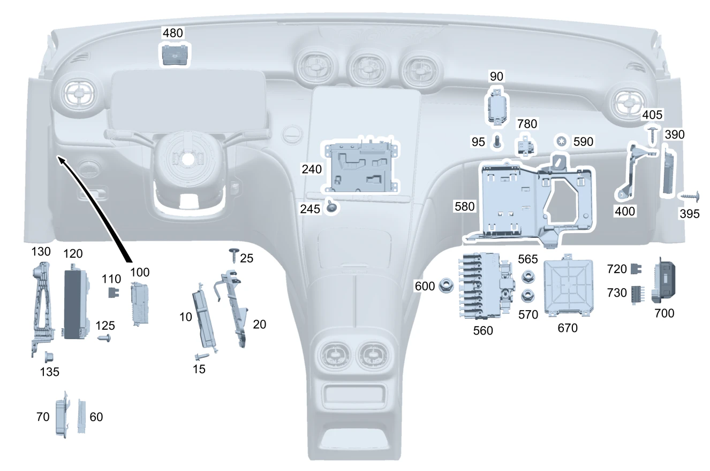

| № | Артикул | Название | Кол. | Примечание | Ограничение |
|---|---|---|---|---|---|
| 10 | A 206 900 86 21 | Блок управления (CONTROL UNIT) | 1 | Комбинация приборов [672] ДЕТАЛЬ ПОСЛЕ УСТАН.ПРОВЕРИТЬ НА АКТУАЛЬНОСТЬ "ПРОШИВНОГО" ПО | 521/525 |
| 10 | A 206 900 97 22 | Блок управления (CONTROL UNIT) | 1 | Комбинация приборов [672] ДЕТАЛЬ ПОСЛЕ УСТАН.ПРОВЕРИТЬ НА АКТУАЛЬНОСТЬ "ПРОШИВНОГО" ПО | 521/525 |
| 10 | A 223 900 25 39 | Блок управления (CONTROL UNIT) | 1 | Комбинация приборов [672] ДЕТАЛЬ ПОСЛЕ УСТАН.ПРОВЕРИТЬ НА АКТУАЛЬНОСТЬ "ПРОШИВНОГО" ПО | (521/525)+444 |
| 10 | A 223 900 89 40 | Блок управления (CONTROL UNIT) | 1 | Комбинация приборов [672] ДЕТАЛЬ ПОСЛЕ УСТАН.ПРОВЕРИТЬ НА АКТУАЛЬНОСТЬ "ПРОШИВНОГО" ПО | (521/525)+444 |
| 15 | N 910105 006023 | Винт с 6-гранной головкой (HEXAGON HEAD BOLT) | 1 | Крепление блока управления; M6X16 | 521/525 |
| 15 | N 000000 008923 | Винт с 6-гранной головкой (HEXAGON HEAD BOLT) | 1 | Крепление блока управления; M6X20 | 521/525 |
| 20 | A 206 545 68 00 | Держатель (HOLDER) | 1 | Блок управления Рулевое управление: Влево | 521/525 |
| 20 | A 206 545 69 00 | Держатель (HOLDER) | 1 | Блок управления Рулевое управление: Вправо | 521/525 |
| 25 | A 000 990 70 06 | Винт со полукругл.головой (PAN HEAD SCREW W COLLAR) | 3 | Крепление держателя; 5X20 | 521/525 |
| 60 | A 223 900 69 31 | Блок управления (CONTROL UNIT) | 1 | Блок управления CAN трансмиссии [672] ДЕТАЛЬ ПОСЛЕ УСТАН.ПРОВЕРИТЬ НА АКТУАЛЬНОСТЬ "ПРОШИВНОГО" ПО | M654 |
| 60 | A 223 900 03 43 | Блок управления (CONTROL UNIT) | 1 | Блок управления CAN трансмиссии [672] ДЕТАЛЬ ПОСЛЕ УСТАН.ПРОВЕРИТЬ НА АКТУАЛЬНОСТЬ "ПРОШИВНОГО" ПО | M654 |
| 60 | A 178 900 70 00 | Блок управления (CONTROL UNIT) | 1 | Блок управления CAN трансмиссии [672] ДЕТАЛЬ ПОСЛЕ УСТАН.ПРОВЕРИТЬ НА АКТУАЛЬНОСТЬ "ПРОШИВНОГО" ПО | (M654/M656/M254/M256)+1U2 |
| 70 | A 206 545 04 00 | Держатель (HOLDER) | 1 | Держатель БУ шины CAN трансмиссии Рулевое управление: Влево | |
| 70 | A 206 545 04 00 | Держатель (HOLDER) | 1 | Держатель БУ шины CAN трансмиссии Рулевое управление: Вправо | |
| 90 | A 000 900 83 46 | Блок управления | 1 | Блок управления KEYLESS\-GO [429] ДЕТАЛЬ, СВЯЗАННАЯ С ПРОТИВОУГОННОЙ БЕЗОПАСНОСТЬЮ | 896 |
| 90 | A 000 900 92 46 | Блок управления (CONTROL UNIT) | 1 | Блок управления KEYLESS\-GO [429] ДЕТАЛЬ, СВЯЗАННАЯ С ПРОТИВОУГОННОЙ БЕЗОПАСНОСТЬЮ [672] ДЕТАЛЬ ПОСЛЕ УСТАН.ПРОВЕРИТЬ НА АКТУАЛЬНОСТЬ "ПРОШИВНОГО" ПО | 896 |
| 90 | A 000 900 68 50 | Блок управления (CONTROL UNIT) | 1 | Блок управления KEYLESS\-GO [429] ДЕТАЛЬ, СВЯЗАННАЯ С ПРОТИВОУГОННОЙ БЕЗОПАСНОСТЬЮ [672] ДЕТАЛЬ ПОСЛЕ УСТАН.ПРОВЕРИТЬ НА АКТУАЛЬНОСТЬ "ПРОШИВНОГО" ПО | 896 |
| 90 | A 000 900 71 50 | Блок управления (CONTROL UNIT) | 1 | Блок управления KEYLESS\-GO [429] ДЕТАЛЬ, СВЯЗАННАЯ С ПРОТИВОУГОННОЙ БЕЗОПАСНОСТЬЮ [672] ДЕТАЛЬ ПОСЛЕ УСТАН.ПРОВЕРИТЬ НА АКТУАЛЬНОСТЬ "ПРОШИВНОГО" ПО | 896 |
| 90 | A 000 900 75 50 | Блок управления (CONTROL UNIT) | 1 | Блок управления KEYLESS\-GO [429] ДЕТАЛЬ, СВЯЗАННАЯ С ПРОТИВОУГОННОЙ БЕЗОПАСНОСТЬЮ [672] ДЕТАЛЬ ПОСЛЕ УСТАН.ПРОВЕРИТЬ НА АКТУАЛЬНОСТЬ "ПРОШИВНОГО" ПО | 896+806 |
| 90 | A 000 900 76 50 | Блок управления (CONTROL UNIT) | 1 | Блок управления KEYLESS\-GO [429] ДЕТАЛЬ, СВЯЗАННАЯ С ПРОТИВОУГОННОЙ БЕЗОПАСНОСТЬЮ [672] ДЕТАЛЬ ПОСЛЕ УСТАН.ПРОВЕРИТЬ НА АКТУАЛЬНОСТЬ "ПРОШИВНОГО" ПО | 896+806 |
| 90 | A 000 900 76 50 | Блок управления (CONTROL UNIT) | 1 | Блок управления KEYLESS\-GO [429] ДЕТАЛЬ, СВЯЗАННАЯ С ПРОТИВОУГОННОЙ БЕЗОПАСНОСТЬЮ [672] ДЕТАЛЬ ПОСЛЕ УСТАН.ПРОВЕРИТЬ НА АКТУАЛЬНОСТЬ "ПРОШИВНОГО" ПО | 896 |
| 90 | A 000 900 73 50 | Блок управления (CONTROL UNIT) | 1 | Блок управления KEYLESS\-GO [429] ДЕТАЛЬ, СВЯЗАННАЯ С ПРОТИВОУГОННОЙ БЕЗОПАСНОСТЬЮ [672] ДЕТАЛЬ ПОСЛЕ УСТАН.ПРОВЕРИТЬ НА АКТУАЛЬНОСТЬ "ПРОШИВНОГО" ПО | 896+(805+055) |
| 90 | A 000 900 73 50 | Блок управления (CONTROL UNIT) | 1 | Блок управления KEYLESS\-GO [429] ДЕТАЛЬ, СВЯЗАННАЯ С ПРОТИВОУГОННОЙ БЕЗОПАСНОСТЬЮ [672] ДЕТАЛЬ ПОСЛЕ УСТАН.ПРОВЕРИТЬ НА АКТУАЛЬНОСТЬ "ПРОШИВНОГО" ПО | 896 |
| 90 | A 000 900 77 50 | Блок управления (CONTROL UNIT) | 1 | Блок управления KEYLESS\-GO [429] ДЕТАЛЬ, СВЯЗАННАЯ С ПРОТИВОУГОННОЙ БЕЗОПАСНОСТЬЮ [672] ДЕТАЛЬ ПОСЛЕ УСТАН.ПРОВЕРИТЬ НА АКТУАЛЬНОСТЬ "ПРОШИВНОГО" ПО | 896+(806+056) |
| 90 | A 000 900 77 50 | Блок управления (CONTROL UNIT) | 1 | Блок управления KEYLESS\-GO [429] ДЕТАЛЬ, СВЯЗАННАЯ С ПРОТИВОУГОННОЙ БЕЗОПАСНОСТЬЮ [672] ДЕТАЛЬ ПОСЛЕ УСТАН.ПРОВЕРИТЬ НА АКТУАЛЬНОСТЬ "ПРОШИВНОГО" ПО | 896 |
| 90 | A 000 900 80 55 | Блок управления (CONTROL UNIT) | 1 | Блок управления KEYLESS\-GO [429] ДЕТАЛЬ, СВЯЗАННАЯ С ПРОТИВОУГОННОЙ БЕЗОПАСНОСТЬЮ [672] ДЕТАЛЬ ПОСЛЕ УСТАН.ПРОВЕРИТЬ НА АКТУАЛЬНОСТЬ "ПРОШИВНОГО" ПО | 896+807 |
| 90 | A 000 900 82 55 | Блок управления (CONTROL UNIT) | 1 | Блок управления KEYLESS\-GO [429] ДЕТАЛЬ, СВЯЗАННАЯ С ПРОТИВОУГОННОЙ БЕЗОПАСНОСТЬЮ [672] ДЕТАЛЬ ПОСЛЕ УСТАН.ПРОВЕРИТЬ НА АКТУАЛЬНОСТЬ "ПРОШИВНОГО" ПО | 896 |
| 95 | N 000000 008350 | FILLISTER HD SCREW (FILLISTER HEAD SCREW) | 1 | Крепление блока управления системы KEYLESS\-GO; M6X20 Рулевое управление: Вправо | 896 |
| 100 | A 223 906 03 02 | Коробка предохр.и реле (FUSE AND RELAY BOX) | 1 | Модуль предохранителей и реле панель приборов | |
| 110 | N 000000 007664 | Плавкая вставка (FUSE LINK) | 1 | MINI; F\-5A\-S | |
| 110 | N 000000 008708 | Плавкая вставка (FUSE LINK) | 1 | MINI; \-F\-5\-E | |
| 110 | N 000000 007665 | Плавкая вставка (FUSE LINK) | 1 | MINI; F\-7.5A\-S | |
| 110 | N 000000 008709 | Плавкая вставка (FUSE LINK) | 1 | MINI; F\-7,5\-E | |
| 110 | N 000000 007666 | Плавкая вставка (FUSE LINK) | 1 | MINI; F\-10\-S | |
| 110 | N 000000 008710 | Плавкая вставка (FUSE LINK) | 1 | MINI; F\-10\-E | |
| 110 | N 000000 007667 | Плавкая вставка (FUSE LINK) | 1 | MINI; F\-15\-S | |
| 110 | N 000000 008711 | Плавкая вставка (FUSE LINK) | 1 | MINI; F\-15\-E | |
| 110 | N 000000 007648 | Плавкая вставка (FUSE LINK) | 1 | Плоский предохранитель ATO; C\-5A\-S | |
| 110 | N 000000 008698 | Плавкая вставка (FUSE LINK) | 1 | Плоский предохранитель ATO; \-C\-5\-E | |
| 110 | N 000000 007649 | Плавкая вставка (FUSE LINK) | 1 | Плоский предохранитель ATO; C\-7,5A\-S | |
| 110 | N 000000 008699 | Плавкая вставка (FUSE LINK) | 1 | Плоский предохранитель ATO; C\-7,5\-E | |
| 110 | N 000000 007650 | Плавкая вставка (FUSE LINK) | 1 | Плоский предохранитель ATO; C\-10A\-S | |
| 110 | N 000000 008700 | Плавкая вставка (FUSE LINK) | 1 | Плоский предохранитель ATO; C\-10\-E | |
| 110 | N 000000 007651 | Плавкая вставка (FUSE LINK) | 1 | Плоский предохранитель ATO; C\-15A\-S | |
| 110 | N 000000 008701 | Плавкая вставка (FUSE LINK) | 1 | Плоский предохранитель ATO; C\-15\-E | |
| 110 | N 000000 007652 | Плавкая вставка (FUSE LINK) | 1 | Плоский предохранитель ATO; C\-20A\-S | |
| 110 | N 000000 008702 | Плавкая вставка (FUSE LINK) | 1 | Плоский предохранитель ATO; C\-20\-E | |
| 110 | N 000000 007653 | Плавкая вставка (FUSE LINK) | 1 | Плоский предохранитель ATO; C\-25A\-S | |
| 110 | N 000000 008703 | Плавкая вставка (FUSE LINK) | 1 | Плоский предохранитель ATO; C\-25\-E | |
| 110 | N 000000 007654 | Плавкая вставка (FUSE LINK) | 1 | Плоский предохранитель ATO; C\-30A\-S | |
| 110 | N 000000 008704 | Плавкая вставка (FUSE LINK) | 1 | Плоский предохранитель ATO; C\-30\-E | |
| 120 | A 206 900 15 20 | Блок управления (CONTROL UNIT) | 1 | Блок управления центральным модулем электрооборудования SAM спереди [672] ДЕТАЛЬ ПОСЛЕ УСТАН.ПРОВЕРИТЬ НА АКТУАЛЬНОСТЬ "ПРОШИВНОГО" ПО | |
| 120 | A 206 900 16 20 | Блок управления (CONTROL UNIT) | 1 | Блок управления центральным модулем электрооборудования SAM спереди [672] ДЕТАЛЬ ПОСЛЕ УСТАН.ПРОВЕРИТЬ НА АКТУАЛЬНОСТЬ "ПРОШИВНОГО" ПО | 891/894 |
| 120 | A 206 900 80 21 | Блок управления | 1 | Блок управления центральным модулем электрооборудования SAM спереди [672] ДЕТАЛЬ ПОСЛЕ УСТАН.ПРОВЕРИТЬ НА АКТУАЛЬНОСТЬ "ПРОШИВНОГО" ПО | 805/806/807 |
| 120 | A 206 900 81 21 | Блок управления (CONTROL UNIT) | 1 | Блок управления центральным модулем электрооборудования SAM спереди [672] ДЕТАЛЬ ПОСЛЕ УСТАН.ПРОВЕРИТЬ НА АКТУАЛЬНОСТЬ "ПРОШИВНОГО" ПО | (805/806/807)+(891/894) |
| 120 | A 206 900 10 24 | Блок управления | 1 | Блок управления центральным модулем электрооборудования SAM спереди [672] ДЕТАЛЬ ПОСЛЕ УСТАН.ПРОВЕРИТЬ НА АКТУАЛЬНОСТЬ "ПРОШИВНОГО" ПО | 805/806/807 |
| 120 | A 206 900 10 24 | Блок управления | 1 | Блок управления центральным модулем электрооборудования SAM спереди [672] ДЕТАЛЬ ПОСЛЕ УСТАН.ПРОВЕРИТЬ НА АКТУАЛЬНОСТЬ "ПРОШИВНОГО" ПО | |
| 120 | A 206 900 11 24 | Блок управления (CONTROL UNIT) | 1 | Блок управления центральным модулем электрооборудования SAM спереди [672] ДЕТАЛЬ ПОСЛЕ УСТАН.ПРОВЕРИТЬ НА АКТУАЛЬНОСТЬ "ПРОШИВНОГО" ПО | (805/806/807)+(891/894) |
| 120 | A 206 900 11 24 | Блок управления (CONTROL UNIT) | 1 | Блок управления центральным модулем электрооборудования SAM спереди [672] ДЕТАЛЬ ПОСЛЕ УСТАН.ПРОВЕРИТЬ НА АКТУАЛЬНОСТЬ "ПРОШИВНОГО" ПО | (891/894) |
| 120 | A 206 900 01 24 | Блок управления (CONTROL UNIT) | 1 | Блок управления центральным модулем электрооборудования SAM спереди [672] ДЕТАЛЬ ПОСЛЕ УСТАН.ПРОВЕРИТЬ НА АКТУАЛЬНОСТЬ "ПРОШИВНОГО" ПО | 806/807/808 |
| 120 | A 206 900 01 24 | Блок управления (CONTROL UNIT) | 1 | Блок управления центральным модулем электрооборудования SAM спереди [672] ДЕТАЛЬ ПОСЛЕ УСТАН.ПРОВЕРИТЬ НА АКТУАЛЬНОСТЬ "ПРОШИВНОГО" ПО | |
| 120 | A 206 900 02 24 | Блок управления (CONTROL UNIT) | 1 | Блок управления центральным модулем электрооборудования SAM спереди [672] ДЕТАЛЬ ПОСЛЕ УСТАН.ПРОВЕРИТЬ НА АКТУАЛЬНОСТЬ "ПРОШИВНОГО" ПО | (806/807/808)+(891/894) |
| 120 | A 206 900 02 24 | Блок управления (CONTROL UNIT) | 1 | Блок управления центральным модулем электрооборудования SAM спереди [672] ДЕТАЛЬ ПОСЛЕ УСТАН.ПРОВЕРИТЬ НА АКТУАЛЬНОСТЬ "ПРОШИВНОГО" ПО | (891/894) |
| 120 | A 206 900 16 25 | Блок управления | 1 | Блок управления центральным модулем электрооборудования SAM спереди [672] ДЕТАЛЬ ПОСЛЕ УСТАН.ПРОВЕРИТЬ НА АКТУАЛЬНОСТЬ "ПРОШИВНОГО" ПО | 807 |
| 120 | A 206 900 16 25 | Блок управления | 1 | Блок управления центральным модулем электрооборудования SAM спереди [672] ДЕТАЛЬ ПОСЛЕ УСТАН.ПРОВЕРИТЬ НА АКТУАЛЬНОСТЬ "ПРОШИВНОГО" ПО | |
| 120 | A 206 900 17 25 | Блок управления (CONTROL UNIT) | 1 | Блок управления центральным модулем электрооборудования SAM спереди [672] ДЕТАЛЬ ПОСЛЕ УСТАН.ПРОВЕРИТЬ НА АКТУАЛЬНОСТЬ "ПРОШИВНОГО" ПО | (891/894)+807 |
| 120 | A 206 900 17 25 | Блок управления (CONTROL UNIT) | 1 | Блок управления центральным модулем электрооборудования SAM спереди [672] ДЕТАЛЬ ПОСЛЕ УСТАН.ПРОВЕРИТЬ НА АКТУАЛЬНОСТЬ "ПРОШИВНОГО" ПО | (891/894) |
| 125 | A 094 990 18 05 | FILLISTER HD SCREW (PAN HEAD SCREW) | 1 | Крепление блока управления | |
| 130 | A 254 545 88 00 | Держатель (HOLDER) | 1 | Держатель БУ SAM спереди Рулевое управление: Влево | |
| 130 | A 254 545 20 00 | Держатель (HOLDER) | 1 | Держатель БУ SAM спереди Рулевое управление: Вправо | |
| 135 | A 000 990 35 62 | Пластмассовая гайка (PLASTIC NUT) | 3 | Крепление держателя | |
| 240 | A 297 900 82 20 | Блок управления (CONTROL UNIT) | 1 | Головное устройство [672] ДЕТАЛЬ ПОСЛЕ УСТАН.ПРОВЕРИТЬ НА АКТУАЛЬНОСТЬ "ПРОШИВНОГО" ПО | 521+0U7 |
| 240 | A 297 900 33 20 | Блок управления (CONTROL UNIT) | 1 | Головное устройство [672] ДЕТАЛЬ ПОСЛЕ УСТАН.ПРОВЕРИТЬ НА АКТУАЛЬНОСТЬ "ПРОШИВНОГО" ПО | 521+0U7+M008 |
| 240 | A 297 900 34 20 | Блок управления (CONTROL UNIT) | 1 | Головное устройство [672] ДЕТАЛЬ ПОСЛЕ УСТАН.ПРОВЕРИТЬ НА АКТУАЛЬНОСТЬ "ПРОШИВНОГО" ПО | 521+0U7+(810/M139)+M008 |
| 240 | A 297 900 39 20 | Блок управления (CONTROL UNIT) | 1 | Головное устройство [672] ДЕТАЛЬ ПОСЛЕ УСТАН.ПРОВЕРИТЬ НА АКТУАЛЬНОСТЬ "ПРОШИВНОГО" ПО [697] ДЕТАЛЬ ПОСТАВЛЯЕТСЯ ТОЛЬКО/ИЛИ ТАКЖЕ КАК ЗАП.ЧАСТЬ | 525+0U7+M008 |
| 240 | A 214 900 48 12 | Блок управления | 1 | Головное устройство [672] ДЕТАЛЬ ПОСЛЕ УСТАН.ПРОВЕРИТЬ НА АКТУАЛЬНОСТЬ "ПРОШИВНОГО" ПО | 528+0U1 |
| 240 | A 214 900 86 14 | Блок управления | 1 | Головное устройство [672] ДЕТАЛЬ ПОСЛЕ УСТАН.ПРОВЕРИТЬ НА АКТУАЛЬНОСТЬ "ПРОШИВНОГО" ПО | 528+0U1 |
| 240 | A 214 900 66 15 | Блок управления | 1 | Головное устройство [672] ДЕТАЛЬ ПОСЛЕ УСТАН.ПРОВЕРИТЬ НА АКТУАЛЬНОСТЬ "ПРОШИВНОГО" ПО | 528+0U1 |
| 240 | A 214 900 78 15 | Блок управления (CONTROL UNIT) | 1 | Головное устройство [672] ДЕТАЛЬ ПОСЛЕ УСТАН.ПРОВЕРИТЬ НА АКТУАЛЬНОСТЬ "ПРОШИВНОГО" ПО | 528+0U1 |
| 240 | A 214 900 71 16 | Блок управления | 1 | Головное устройство [672] ДЕТАЛЬ ПОСЛЕ УСТАН.ПРОВЕРИТЬ НА АКТУАЛЬНОСТЬ "ПРОШИВНОГО" ПО | 528+0U1 |
| 240 | A 214 900 17 17 | Блок управления (CONTROL UNIT) | 1 | Головное устройство [672] ДЕТАЛЬ ПОСЛЕ УСТАН.ПРОВЕРИТЬ НА АКТУАЛЬНОСТЬ "ПРОШИВНОГО" ПО | 528+0U1 |
| 240 | A 214 900 76 18 | Блок управления (CONTROL UNIT) | 1 | Головное устройство [672] ДЕТАЛЬ ПОСЛЕ УСТАН.ПРОВЕРИТЬ НА АКТУАЛЬНОСТЬ "ПРОШИВНОГО" ПО | 528+0U1 |
| 240 | A 214 900 49 12 | Блок управления | 1 | Головное устройство [672] ДЕТАЛЬ ПОСЛЕ УСТАН.ПРОВЕРИТЬ НА АКТУАЛЬНОСТЬ "ПРОШИВНОГО" ПО | 528+(0U2/0U4) |
| 240 | A 214 900 87 14 | Блок управления | 1 | Головное устройство [672] ДЕТАЛЬ ПОСЛЕ УСТАН.ПРОВЕРИТЬ НА АКТУАЛЬНОСТЬ "ПРОШИВНОГО" ПО | 528+(0U2/0U4) |
| 240 | A 214 900 67 15 | Блок управления | 1 | Головное устройство [672] ДЕТАЛЬ ПОСЛЕ УСТАН.ПРОВЕРИТЬ НА АКТУАЛЬНОСТЬ "ПРОШИВНОГО" ПО | 528+(0U2/0U4) |
| 240 | A 214 900 79 15 | Блок управления (CONTROL UNIT) | 1 | Головное устройство [672] ДЕТАЛЬ ПОСЛЕ УСТАН.ПРОВЕРИТЬ НА АКТУАЛЬНОСТЬ "ПРОШИВНОГО" ПО | 528+(0U2/0U4) |
| 240 | A 214 900 72 16 | Блок управления | 1 | Головное устройство [672] ДЕТАЛЬ ПОСЛЕ УСТАН.ПРОВЕРИТЬ НА АКТУАЛЬНОСТЬ "ПРОШИВНОГО" ПО | 528+(0U2/0U4) |
| 240 | A 214 900 18 17 | Блок управления (CONTROL UNIT) | 1 | Головное устройство [672] ДЕТАЛЬ ПОСЛЕ УСТАН.ПРОВЕРИТЬ НА АКТУАЛЬНОСТЬ "ПРОШИВНОГО" ПО | 528+(0U2/0U4) |
| 240 | A 214 900 77 18 | Блок управления (CONTROL UNIT) | 1 | Головное устройство [672] ДЕТАЛЬ ПОСЛЕ УСТАН.ПРОВЕРИТЬ НА АКТУАЛЬНОСТЬ "ПРОШИВНОГО" ПО | 528+(0U2/0U4) |
| 240 | A 214 900 50 12 | Блок управления (CONTROL UNIT) | 1 | Головное устройство [672] ДЕТАЛЬ ПОСЛЕ УСТАН.ПРОВЕРИТЬ НА АКТУАЛЬНОСТЬ "ПРОШИВНОГО" ПО | 528+0U3 |
| 240 | A 214 900 88 14 | Блок управления (CONTROL UNIT) | 1 | Головное устройство [672] ДЕТАЛЬ ПОСЛЕ УСТАН.ПРОВЕРИТЬ НА АКТУАЛЬНОСТЬ "ПРОШИВНОГО" ПО | 528+0U3 |
| 240 | A 214 900 68 15 | Блок управления (CONTROL UNIT) | 1 | Головное устройство [672] ДЕТАЛЬ ПОСЛЕ УСТАН.ПРОВЕРИТЬ НА АКТУАЛЬНОСТЬ "ПРОШИВНОГО" ПО | 528+0U3 |
| 240 | A 214 900 80 15 | Блок управления (CONTROL UNIT) | 1 | Головное устройство [672] ДЕТАЛЬ ПОСЛЕ УСТАН.ПРОВЕРИТЬ НА АКТУАЛЬНОСТЬ "ПРОШИВНОГО" ПО | 528+0U3 |
| 240 | A 214 900 73 16 | Блок управления (CONTROL UNIT) | 1 | Головное устройство [672] ДЕТАЛЬ ПОСЛЕ УСТАН.ПРОВЕРИТЬ НА АКТУАЛЬНОСТЬ "ПРОШИВНОГО" ПО | 528+0U3 |
| 240 | A 214 900 19 17 | Блок управления (CONTROL UNIT) | 1 | Головное устройство [672] ДЕТАЛЬ ПОСЛЕ УСТАН.ПРОВЕРИТЬ НА АКТУАЛЬНОСТЬ "ПРОШИВНОГО" ПО | 528+0U3 |
| 240 | A 214 900 78 18 | Блок управления (CONTROL UNIT) | 1 | Головное устройство [672] ДЕТАЛЬ ПОСЛЕ УСТАН.ПРОВЕРИТЬ НА АКТУАЛЬНОСТЬ "ПРОШИВНОГО" ПО | 528+0U3 |
| 240 | A 214 900 51 12 | Блок управления | 1 | Головное устройство [672] ДЕТАЛЬ ПОСЛЕ УСТАН.ПРОВЕРИТЬ НА АКТУАЛЬНОСТЬ "ПРОШИВНОГО" ПО | 528+0U5 |
| 240 | A 214 900 89 14 | Блок управления | 1 | Головное устройство [672] ДЕТАЛЬ ПОСЛЕ УСТАН.ПРОВЕРИТЬ НА АКТУАЛЬНОСТЬ "ПРОШИВНОГО" ПО | 528+0U5 |
| 240 | A 214 900 69 15 | Блок управления | 1 | Головное устройство [672] ДЕТАЛЬ ПОСЛЕ УСТАН.ПРОВЕРИТЬ НА АКТУАЛЬНОСТЬ "ПРОШИВНОГО" ПО | 528+0U5 |
| 240 | A 214 900 81 15 | Блок управления (CONTROL UNIT) | 1 | Головное устройство [672] ДЕТАЛЬ ПОСЛЕ УСТАН.ПРОВЕРИТЬ НА АКТУАЛЬНОСТЬ "ПРОШИВНОГО" ПО | 528+0U5 |
| 240 | A 214 900 74 16 | Блок управления | 1 | Головное устройство [672] ДЕТАЛЬ ПОСЛЕ УСТАН.ПРОВЕРИТЬ НА АКТУАЛЬНОСТЬ "ПРОШИВНОГО" ПО | 528+0U5 |
| 240 | A 214 900 20 17 | Блок управления (CONTROL UNIT) | 1 | Головное устройство [672] ДЕТАЛЬ ПОСЛЕ УСТАН.ПРОВЕРИТЬ НА АКТУАЛЬНОСТЬ "ПРОШИВНОГО" ПО | 528+0U5 |
| 240 | A 214 900 79 18 | Блок управления (CONTROL UNIT) | 1 | Головное устройство [672] ДЕТАЛЬ ПОСЛЕ УСТАН.ПРОВЕРИТЬ НА АКТУАЛЬНОСТЬ "ПРОШИВНОГО" ПО | 528+0U5 |
| 240 | A 214 900 52 12 | Блок управления | 1 | Головное устройство [672] ДЕТАЛЬ ПОСЛЕ УСТАН.ПРОВЕРИТЬ НА АКТУАЛЬНОСТЬ "ПРОШИВНОГО" ПО | 528+(0U7/0U9) |
| 240 | A 214 900 90 14 | Блок управления (CONTROL UNIT) | 1 | Головное устройство [672] ДЕТАЛЬ ПОСЛЕ УСТАН.ПРОВЕРИТЬ НА АКТУАЛЬНОСТЬ "ПРОШИВНОГО" ПО | 528+(0U7/0U9) |
| 240 | A 214 900 70 15 | Блок управления (CONTROL UNIT) | 1 | Головное устройство [672] ДЕТАЛЬ ПОСЛЕ УСТАН.ПРОВЕРИТЬ НА АКТУАЛЬНОСТЬ "ПРОШИВНОГО" ПО | 528+(0U7/0U9) |
| 240 | A 214 900 82 15 | Блок управления (CONTROL UNIT) | 1 | Головное устройство [672] ДЕТАЛЬ ПОСЛЕ УСТАН.ПРОВЕРИТЬ НА АКТУАЛЬНОСТЬ "ПРОШИВНОГО" ПО | 528+(0U7/0U9) |
| 240 | A 214 900 75 16 | Блок управления | 1 | Головное устройство [672] ДЕТАЛЬ ПОСЛЕ УСТАН.ПРОВЕРИТЬ НА АКТУАЛЬНОСТЬ "ПРОШИВНОГО" ПО | 528+(0U7/0U9) |
| 240 | A 214 900 21 17 | Блок управления (CONTROL UNIT) | 1 | Головное устройство [672] ДЕТАЛЬ ПОСЛЕ УСТАН.ПРОВЕРИТЬ НА АКТУАЛЬНОСТЬ "ПРОШИВНОГО" ПО | 528+(0U7/0U9) |
| 240 | A 214 900 80 18 | Блок управления (CONTROL UNIT) | 1 | Головное устройство [672] ДЕТАЛЬ ПОСЛЕ УСТАН.ПРОВЕРИТЬ НА АКТУАЛЬНОСТЬ "ПРОШИВНОГО" ПО | 528+(0U7/0U9) |
| 240 | A 214 900 53 12 | Блок управления | 1 | Головное устройство [672] ДЕТАЛЬ ПОСЛЕ УСТАН.ПРОВЕРИТЬ НА АКТУАЛЬНОСТЬ "ПРОШИВНОГО" ПО | 528+0U8 |
| 240 | A 214 900 91 14 | Блок управления (CONTROL UNIT) | 1 | Головное устройство [672] ДЕТАЛЬ ПОСЛЕ УСТАН.ПРОВЕРИТЬ НА АКТУАЛЬНОСТЬ "ПРОШИВНОГО" ПО | 528+0U8 |
| 240 | A 214 900 71 15 | Блок управления | 1 | Головное устройство [672] ДЕТАЛЬ ПОСЛЕ УСТАН.ПРОВЕРИТЬ НА АКТУАЛЬНОСТЬ "ПРОШИВНОГО" ПО | 528+0U8 |
| 240 | A 214 900 83 15 | Блок управления (CONTROL UNIT) | 1 | Головное устройство [672] ДЕТАЛЬ ПОСЛЕ УСТАН.ПРОВЕРИТЬ НА АКТУАЛЬНОСТЬ "ПРОШИВНОГО" ПО | 528+0U8 |
| 240 | A 214 900 76 16 | Блок управления | 1 | Головное устройство [672] ДЕТАЛЬ ПОСЛЕ УСТАН.ПРОВЕРИТЬ НА АКТУАЛЬНОСТЬ "ПРОШИВНОГО" ПО | 528+0U8 |
| 240 | A 214 900 22 17 | Блок управления (CONTROL UNIT) | 1 | Головное устройство [672] ДЕТАЛЬ ПОСЛЕ УСТАН.ПРОВЕРИТЬ НА АКТУАЛЬНОСТЬ "ПРОШИВНОГО" ПО | 528+0U8 |
| 240 | A 214 900 81 18 | Блок управления (CONTROL UNIT) | 1 | Головное устройство [672] ДЕТАЛЬ ПОСЛЕ УСТАН.ПРОВЕРИТЬ НА АКТУАЛЬНОСТЬ "ПРОШИВНОГО" ПО | 528+0U8 |
| 240 | A 214 900 17 17 | Блок управления (CONTROL UNIT) | 1 | Головное устройство [672] ДЕТАЛЬ ПОСЛЕ УСТАН.ПРОВЕРИТЬ НА АКТУАЛЬНОСТЬ "ПРОШИВНОГО" ПО | 528+0U1+(805+055) |
| 240 | A 214 900 76 18 | Блок управления (CONTROL UNIT) | 1 | Головное устройство [672] ДЕТАЛЬ ПОСЛЕ УСТАН.ПРОВЕРИТЬ НА АКТУАЛЬНОСТЬ "ПРОШИВНОГО" ПО | 528+0U1+(805+055) |
| 240 | A 214 900 76 18 | Блок управления (CONTROL UNIT) | 1 | Головное устройство [672] ДЕТАЛЬ ПОСЛЕ УСТАН.ПРОВЕРИТЬ НА АКТУАЛЬНОСТЬ "ПРОШИВНОГО" ПО | 528+0U1 |
| 240 | A 214 900 08 20 | Блок управления (CONTROL UNIT) | 1 | Головное устройство [672] ДЕТАЛЬ ПОСЛЕ УСТАН.ПРОВЕРИТЬ НА АКТУАЛЬНОСТЬ "ПРОШИВНОГО" ПО | 528+0U1 |
| 240 | A 214 900 18 17 | Блок управления (CONTROL UNIT) | 1 | Головное устройство [672] ДЕТАЛЬ ПОСЛЕ УСТАН.ПРОВЕРИТЬ НА АКТУАЛЬНОСТЬ "ПРОШИВНОГО" ПО | 528+(0U2/0U4)+(805+055) |
| 240 | A 214 900 77 18 | Блок управления (CONTROL UNIT) | 1 | Головное устройство [672] ДЕТАЛЬ ПОСЛЕ УСТАН.ПРОВЕРИТЬ НА АКТУАЛЬНОСТЬ "ПРОШИВНОГО" ПО | 528+(0U2/0U4)+(805+055) |
| 240 | A 214 900 77 18 | Блок управления (CONTROL UNIT) | 1 | Головное устройство [672] ДЕТАЛЬ ПОСЛЕ УСТАН.ПРОВЕРИТЬ НА АКТУАЛЬНОСТЬ "ПРОШИВНОГО" ПО | 528+(0U2/0U4) |
| 240 | A 214 900 09 20 | Блок управления (CONTROL UNIT) | 1 | Головное устройство [672] ДЕТАЛЬ ПОСЛЕ УСТАН.ПРОВЕРИТЬ НА АКТУАЛЬНОСТЬ "ПРОШИВНОГО" ПО | 528+(0U2/0U4) |
| 240 | A 214 900 19 17 | Блок управления (CONTROL UNIT) | 1 | Головное устройство [672] ДЕТАЛЬ ПОСЛЕ УСТАН.ПРОВЕРИТЬ НА АКТУАЛЬНОСТЬ "ПРОШИВНОГО" ПО | 528+0U3+(805+055) |
| 240 | A 214 900 78 18 | Блок управления (CONTROL UNIT) | 1 | Головное устройство [672] ДЕТАЛЬ ПОСЛЕ УСТАН.ПРОВЕРИТЬ НА АКТУАЛЬНОСТЬ "ПРОШИВНОГО" ПО | 528+0U3+(805+055) |
| 240 | A 214 900 78 18 | Блок управления (CONTROL UNIT) | 1 | Головное устройство [672] ДЕТАЛЬ ПОСЛЕ УСТАН.ПРОВЕРИТЬ НА АКТУАЛЬНОСТЬ "ПРОШИВНОГО" ПО | 528+0U3 |
| 240 | A 214 900 10 20 | Блок управления (CONTROL UNIT) | 1 | Головное устройство [672] ДЕТАЛЬ ПОСЛЕ УСТАН.ПРОВЕРИТЬ НА АКТУАЛЬНОСТЬ "ПРОШИВНОГО" ПО | 528+0U3 |
| 240 | A 214 900 20 17 | Блок управления (CONTROL UNIT) | 1 | Головное устройство [672] ДЕТАЛЬ ПОСЛЕ УСТАН.ПРОВЕРИТЬ НА АКТУАЛЬНОСТЬ "ПРОШИВНОГО" ПО | 528+0U5+(805+055) |
| 240 | A 214 900 79 18 | Блок управления (CONTROL UNIT) | 1 | Головное устройство [672] ДЕТАЛЬ ПОСЛЕ УСТАН.ПРОВЕРИТЬ НА АКТУАЛЬНОСТЬ "ПРОШИВНОГО" ПО | 528+0U5+(805+055) |
| 240 | A 214 900 79 18 | Блок управления (CONTROL UNIT) | 1 | Головное устройство [672] ДЕТАЛЬ ПОСЛЕ УСТАН.ПРОВЕРИТЬ НА АКТУАЛЬНОСТЬ "ПРОШИВНОГО" ПО | 528+0U5 |
| 240 | A 214 900 11 20 | Блок управления (CONTROL UNIT) | 1 | Головное устройство [672] ДЕТАЛЬ ПОСЛЕ УСТАН.ПРОВЕРИТЬ НА АКТУАЛЬНОСТЬ "ПРОШИВНОГО" ПО | 528+0U5 |
| 240 | A 214 900 21 17 | Блок управления (CONTROL UNIT) | 1 | Головное устройство [672] ДЕТАЛЬ ПОСЛЕ УСТАН.ПРОВЕРИТЬ НА АКТУАЛЬНОСТЬ "ПРОШИВНОГО" ПО | 528+0U7+(805+055) |
| 240 | A 214 900 80 18 | Блок управления (CONTROL UNIT) | 1 | Головное устройство [672] ДЕТАЛЬ ПОСЛЕ УСТАН.ПРОВЕРИТЬ НА АКТУАЛЬНОСТЬ "ПРОШИВНОГО" ПО | 528+0U7+(805+055) |
| 240 | A 214 900 80 18 | Блок управления (CONTROL UNIT) | 1 | Головное устройство [672] ДЕТАЛЬ ПОСЛЕ УСТАН.ПРОВЕРИТЬ НА АКТУАЛЬНОСТЬ "ПРОШИВНОГО" ПО | 528+0U7 |
| 240 | A 214 900 12 20 | Блок управления (CONTROL UNIT) | 1 | Головное устройство [672] ДЕТАЛЬ ПОСЛЕ УСТАН.ПРОВЕРИТЬ НА АКТУАЛЬНОСТЬ "ПРОШИВНОГО" ПО | 528+0U7 |
| 240 | A 214 900 47 16 | Блок управления | 1 | Головное устройство [672] ДЕТАЛЬ ПОСЛЕ УСТАН.ПРОВЕРИТЬ НА АКТУАЛЬНОСТЬ "ПРОШИВНОГО" ПО | 528+0U9+(805+055) |
| 240 | A 214 900 19 18 | Блок управления | 1 | Головное устройство [672] ДЕТАЛЬ ПОСЛЕ УСТАН.ПРОВЕРИТЬ НА АКТУАЛЬНОСТЬ "ПРОШИВНОГО" ПО | 528+0U9+(805+055) |
| 240 | A 214 900 74 19 | Блок управления | 1 | Головное устройство [672] ДЕТАЛЬ ПОСЛЕ УСТАН.ПРОВЕРИТЬ НА АКТУАЛЬНОСТЬ "ПРОШИВНОГО" ПО | 528+0U9+(805+055) |
| 240 | A 214 900 80 18 | Блок управления (CONTROL UNIT) | 1 | Головное устройство [672] ДЕТАЛЬ ПОСЛЕ УСТАН.ПРОВЕРИТЬ НА АКТУАЛЬНОСТЬ "ПРОШИВНОГО" ПО | 528+0U9+(805+055) |
| 240 | A 214 900 80 18 | Блок управления (CONTROL UNIT) | 1 | Головное устройство [672] ДЕТАЛЬ ПОСЛЕ УСТАН.ПРОВЕРИТЬ НА АКТУАЛЬНОСТЬ "ПРОШИВНОГО" ПО | 528+0U9 |
| 240 | A 214 900 97 19 | Блок управления (CONTROL UNIT) | 1 | Головное устройство [672] ДЕТАЛЬ ПОСЛЕ УСТАН.ПРОВЕРИТЬ НА АКТУАЛЬНОСТЬ "ПРОШИВНОГО" ПО | 528+0U9 |
| 240 | A 214 900 22 17 | Блок управления (CONTROL UNIT) | 1 | Головное устройство [672] ДЕТАЛЬ ПОСЛЕ УСТАН.ПРОВЕРИТЬ НА АКТУАЛЬНОСТЬ "ПРОШИВНОГО" ПО | 528+0U8+(805+055) |
| 240 | A 214 900 81 18 | Блок управления (CONTROL UNIT) | 1 | Головное устройство [672] ДЕТАЛЬ ПОСЛЕ УСТАН.ПРОВЕРИТЬ НА АКТУАЛЬНОСТЬ "ПРОШИВНОГО" ПО | 528+0U8+(805+055) |
| 240 | A 214 900 81 18 | Блок управления (CONTROL UNIT) | 1 | Головное устройство [672] ДЕТАЛЬ ПОСЛЕ УСТАН.ПРОВЕРИТЬ НА АКТУАЛЬНОСТЬ "ПРОШИВНОГО" ПО | 528+0U8 |
| 240 | A 214 900 13 20 | Блок управления (CONTROL UNIT) | 1 | Головное устройство [672] ДЕТАЛЬ ПОСЛЕ УСТАН.ПРОВЕРИТЬ НА АКТУАЛЬНОСТЬ "ПРОШИВНОГО" ПО | 528+0U8 |
| 240 | A 214 900 08 20 | Блок управления (CONTROL UNIT) | 1 | Головное устройство [672] ДЕТАЛЬ ПОСЛЕ УСТАН.ПРОВЕРИТЬ НА АКТУАЛЬНОСТЬ "ПРОШИВНОГО" ПО | 528+0U1+(806/807) |
| 240 | A 214 900 20 20 | Блок управления | 1 | Головное устройство [672] ДЕТАЛЬ ПОСЛЕ УСТАН.ПРОВЕРИТЬ НА АКТУАЛЬНОСТЬ "ПРОШИВНОГО" ПО | 528+0U1+(806/807) |
| 240 | A 214 900 24 21 | Блок управления (CONTROL UNIT) | 1 | Головное устройство [672] ДЕТАЛЬ ПОСЛЕ УСТАН.ПРОВЕРИТЬ НА АКТУАЛЬНОСТЬ "ПРОШИВНОГО" ПО | 528+0U1+806 |
| 240 | A 214 900 46 22 | Блок управления | 1 | Головное устройство [672] ДЕТАЛЬ ПОСЛЕ УСТАН.ПРОВЕРИТЬ НА АКТУАЛЬНОСТЬ "ПРОШИВНОГО" ПО | 528+0U1 |
| 240 | A 214 900 58 22 | Блок управления (CONTROL UNIT) | 1 | Головное устройство [672] ДЕТАЛЬ ПОСЛЕ УСТАН.ПРОВЕРИТЬ НА АКТУАЛЬНОСТЬ "ПРОШИВНОГО" ПО | 528+0U1 |
| 240 | A 214 900 58 22 | Блок управления (CONTROL UNIT) | 1 | Головное устройство [672] ДЕТАЛЬ ПОСЛЕ УСТАН.ПРОВЕРИТЬ НА АКТУАЛЬНОСТЬ "ПРОШИВНОГО" ПО | 528+0U1 |
| 240 | A 214 900 09 20 | Блок управления (CONTROL UNIT) | 1 | Головное устройство [672] ДЕТАЛЬ ПОСЛЕ УСТАН.ПРОВЕРИТЬ НА АКТУАЛЬНОСТЬ "ПРОШИВНОГО" ПО | 528+(0U2/0U4)+(806/807) |
| 240 | A 214 900 21 20 | Блок управления | 1 | Головное устройство [672] ДЕТАЛЬ ПОСЛЕ УСТАН.ПРОВЕРИТЬ НА АКТУАЛЬНОСТЬ "ПРОШИВНОГО" ПО | 528+(0U2/0U4)+(806/807) |
| 240 | A 214 900 25 21 | Блок управления (CONTROL UNIT) | 1 | Головное устройство [672] ДЕТАЛЬ ПОСЛЕ УСТАН.ПРОВЕРИТЬ НА АКТУАЛЬНОСТЬ "ПРОШИВНОГО" ПО | 528+(0U2/0U4)+806 |
| 240 | A 214 900 47 22 | Блок управления | 1 | Головное устройство [672] ДЕТАЛЬ ПОСЛЕ УСТАН.ПРОВЕРИТЬ НА АКТУАЛЬНОСТЬ "ПРОШИВНОГО" ПО | 528+(0U2/0U4) |
| 240 | A 214 900 59 22 | Блок управления (CONTROL UNIT) | 1 | Головное устройство [672] ДЕТАЛЬ ПОСЛЕ УСТАН.ПРОВЕРИТЬ НА АКТУАЛЬНОСТЬ "ПРОШИВНОГО" ПО | 528+(0U2/0U4) |
| 240 | A 214 900 10 20 | Блок управления (CONTROL UNIT) | 1 | Головное устройство [672] ДЕТАЛЬ ПОСЛЕ УСТАН.ПРОВЕРИТЬ НА АКТУАЛЬНОСТЬ "ПРОШИВНОГО" ПО | 528+0U3+(806/807) |
| 240 | A 214 900 22 20 | Блок управления | 1 | Головное устройство [672] ДЕТАЛЬ ПОСЛЕ УСТАН.ПРОВЕРИТЬ НА АКТУАЛЬНОСТЬ "ПРОШИВНОГО" ПО | 528+0U3+(806/807) |
| 240 | A 214 900 26 21 | Блок управления (CONTROL UNIT) | 1 | Головное устройство [672] ДЕТАЛЬ ПОСЛЕ УСТАН.ПРОВЕРИТЬ НА АКТУАЛЬНОСТЬ "ПРОШИВНОГО" ПО | 528+0U3+806 |
| 240 | A 214 900 52 21 | Блок управления (CONTROL UNIT) | 1 | Головное устройство [672] ДЕТАЛЬ ПОСЛЕ УСТАН.ПРОВЕРИТЬ НА АКТУАЛЬНОСТЬ "ПРОШИВНОГО" ПО | 528+0U3 |
| 240 | A 214 900 48 22 | Блок управления | 1 | Головное устройство [672] ДЕТАЛЬ ПОСЛЕ УСТАН.ПРОВЕРИТЬ НА АКТУАЛЬНОСТЬ "ПРОШИВНОГО" ПО | 528+0U3 |
| 240 | A 214 900 60 22 | Блок управления (CONTROL UNIT) | 1 | Головное устройство [672] ДЕТАЛЬ ПОСЛЕ УСТАН.ПРОВЕРИТЬ НА АКТУАЛЬНОСТЬ "ПРОШИВНОГО" ПО | 528+0U3 |
| 240 | A 214 900 60 22 | Блок управления (CONTROL UNIT) | 1 | Головное устройство [672] ДЕТАЛЬ ПОСЛЕ УСТАН.ПРОВЕРИТЬ НА АКТУАЛЬНОСТЬ "ПРОШИВНОГО" ПО | 528+0U3 |
| 240 | A 214 900 11 20 | Блок управления (CONTROL UNIT) | 1 | Головное устройство [672] ДЕТАЛЬ ПОСЛЕ УСТАН.ПРОВЕРИТЬ НА АКТУАЛЬНОСТЬ "ПРОШИВНОГО" ПО | 528+0U5+(806/807) |
| 240 | A 214 900 23 20 | Блок управления | 1 | Головное устройство [672] ДЕТАЛЬ ПОСЛЕ УСТАН.ПРОВЕРИТЬ НА АКТУАЛЬНОСТЬ "ПРОШИВНОГО" ПО | 528+0U5+(806/807) |
| 240 | A 214 900 27 21 | Блок управления | 1 | Головное устройство [672] ДЕТАЛЬ ПОСЛЕ УСТАН.ПРОВЕРИТЬ НА АКТУАЛЬНОСТЬ "ПРОШИВНОГО" ПО | 528+0U5+806 |
| 240 | A 214 900 27 21 | Блок управления | 1 | Головное устройство [672] ДЕТАЛЬ ПОСЛЕ УСТАН.ПРОВЕРИТЬ НА АКТУАЛЬНОСТЬ "ПРОШИВНОГО" ПО | 528+0U5 |
| 240 | A 214 900 49 22 | Блок управления | 1 | Головное устройство [672] ДЕТАЛЬ ПОСЛЕ УСТАН.ПРОВЕРИТЬ НА АКТУАЛЬНОСТЬ "ПРОШИВНОГО" ПО | 528+0U5 |
| 240 | A 214 900 61 22 | Блок управления (CONTROL UNIT) | 1 | Головное устройство [672] ДЕТАЛЬ ПОСЛЕ УСТАН.ПРОВЕРИТЬ НА АКТУАЛЬНОСТЬ "ПРОШИВНОГО" ПО | 528+0U5 |
| 240 | A 214 900 61 22 | Блок управления (CONTROL UNIT) | 1 | Головное устройство [672] ДЕТАЛЬ ПОСЛЕ УСТАН.ПРОВЕРИТЬ НА АКТУАЛЬНОСТЬ "ПРОШИВНОГО" ПО | 528+0U5 |
| 240 | A 214 900 33 18 | Блок управления | 1 | Головное устройство [672] ДЕТАЛЬ ПОСЛЕ УСТАН.ПРОВЕРИТЬ НА АКТУАЛЬНОСТЬ "ПРОШИВНОГО" ПО | 528+0U5+830+(806/807) |
| 240 | A 214 900 32 20 | Блок управления | 1 | Головное устройство [672] ДЕТАЛЬ ПОСЛЕ УСТАН.ПРОВЕРИТЬ НА АКТУАЛЬНОСТЬ "ПРОШИВНОГО" ПО | 528+0U5+830+(806/807) |
| 240 | A 214 900 62 22 | Блок управления (CONTROL UNIT) | 1 | Головное устройство [672] ДЕТАЛЬ ПОСЛЕ УСТАН.ПРОВЕРИТЬ НА АКТУАЛЬНОСТЬ "ПРОШИВНОГО" ПО | 528+0U5+830 |
| 240 | A 214 900 62 22 | Блок управления (CONTROL UNIT) | 1 | Головное устройство [672] ДЕТАЛЬ ПОСЛЕ УСТАН.ПРОВЕРИТЬ НА АКТУАЛЬНОСТЬ "ПРОШИВНОГО" ПО | 528+0U5+830 |
| 240 | A 214 900 30 21 | Блок управления | 1 | Головное устройство [672] ДЕТАЛЬ ПОСЛЕ УСТАН.ПРОВЕРИТЬ НА АКТУАЛЬНОСТЬ "ПРОШИВНОГО" ПО | 528+0U5+830+806 |
| 240 | A 214 900 30 21 | Блок управления | 1 | Головное устройство [672] ДЕТАЛЬ ПОСЛЕ УСТАН.ПРОВЕРИТЬ НА АКТУАЛЬНОСТЬ "ПРОШИВНОГО" ПО | 528+0U5+830 |
| 240 | A 214 900 12 20 | Блок управления (CONTROL UNIT) | 1 | Головное устройство [672] ДЕТАЛЬ ПОСЛЕ УСТАН.ПРОВЕРИТЬ НА АКТУАЛЬНОСТЬ "ПРОШИВНОГО" ПО | 528+(0U7/0U9)+(806/807) |
| 240 | A 214 900 24 20 | Блок управления | 1 | Головное устройство [672] ДЕТАЛЬ ПОСЛЕ УСТАН.ПРОВЕРИТЬ НА АКТУАЛЬНОСТЬ "ПРОШИВНОГО" ПО | 528+(0U7/0U9)+(806/807) |
| 240 | A 214 900 28 21 | Блок управления (CONTROL UNIT) | 1 | Головное устройство [672] ДЕТАЛЬ ПОСЛЕ УСТАН.ПРОВЕРИТЬ НА АКТУАЛЬНОСТЬ "ПРОШИВНОГО" ПО | 528+(0U7/0U9)+806 |
| 240 | A 214 900 50 22 | Блок управления | 1 | Головное устройство [672] ДЕТАЛЬ ПОСЛЕ УСТАН.ПРОВЕРИТЬ НА АКТУАЛЬНОСТЬ "ПРОШИВНОГО" ПО | 528+0U7 |
| 240 | A 214 900 63 22 | Блок управления (CONTROL UNIT) | 1 | Головное устройство [672] ДЕТАЛЬ ПОСЛЕ УСТАН.ПРОВЕРИТЬ НА АКТУАЛЬНОСТЬ "ПРОШИВНОГО" ПО | 528+0U7 |
| 240 | A 214 900 63 22 | Блок управления (CONTROL UNIT) | 1 | Головное устройство [672] ДЕТАЛЬ ПОСЛЕ УСТАН.ПРОВЕРИТЬ НА АКТУАЛЬНОСТЬ "ПРОШИВНОГО" ПО | 528+0U7 |
| 240 | A 214 900 50 22 | Блок управления | 1 | Головное устройство [672] ДЕТАЛЬ ПОСЛЕ УСТАН.ПРОВЕРИТЬ НА АКТУАЛЬНОСТЬ "ПРОШИВНОГО" ПО | 528+0U9 |
| 240 | A 214 900 63 22 | Блок управления (CONTROL UNIT) | 1 | Головное устройство [672] ДЕТАЛЬ ПОСЛЕ УСТАН.ПРОВЕРИТЬ НА АКТУАЛЬНОСТЬ "ПРОШИВНОГО" ПО | 528+0U9 |
| 240 | A 214 900 63 22 | Блок управления (CONTROL UNIT) | 1 | Головное устройство [672] ДЕТАЛЬ ПОСЛЕ УСТАН.ПРОВЕРИТЬ НА АКТУАЛЬНОСТЬ "ПРОШИВНОГО" ПО | 528+0U9 |
| 240 | A 214 900 13 20 | Блок управления (CONTROL UNIT) | 1 | Головное устройство [672] ДЕТАЛЬ ПОСЛЕ УСТАН.ПРОВЕРИТЬ НА АКТУАЛЬНОСТЬ "ПРОШИВНОГО" ПО | 528+0U8+(806/807) |
| 240 | A 214 900 25 20 | Блок управления | 1 | Головное устройство [672] ДЕТАЛЬ ПОСЛЕ УСТАН.ПРОВЕРИТЬ НА АКТУАЛЬНОСТЬ "ПРОШИВНОГО" ПО | 528+0U8+(806/807) |
| 240 | A 214 900 29 21 | Блок управления | 1 | Головное устройство [672] ДЕТАЛЬ ПОСЛЕ УСТАН.ПРОВЕРИТЬ НА АКТУАЛЬНОСТЬ "ПРОШИВНОГО" ПО | 528+0U8+806 |
| 240 | A 214 900 55 21 | Блок управления | 1 | Головное устройство [672] ДЕТАЛЬ ПОСЛЕ УСТАН.ПРОВЕРИТЬ НА АКТУАЛЬНОСТЬ "ПРОШИВНОГО" ПО | 528+0U8 |
| 240 | A 214 900 51 22 | Блок управления | 1 | Головное устройство [672] ДЕТАЛЬ ПОСЛЕ УСТАН.ПРОВЕРИТЬ НА АКТУАЛЬНОСТЬ "ПРОШИВНОГО" ПО | 528+0U8 |
| 240 | A 214 900 64 22 | Блок управления (CONTROL UNIT) | 1 | Головное устройство [672] ДЕТАЛЬ ПОСЛЕ УСТАН.ПРОВЕРИТЬ НА АКТУАЛЬНОСТЬ "ПРОШИВНОГО" ПО | 528+0U8 |
| 240 | A 214 900 64 22 | Блок управления (CONTROL UNIT) | 1 | Головное устройство [672] ДЕТАЛЬ ПОСЛЕ УСТАН.ПРОВЕРИТЬ НА АКТУАЛЬНОСТЬ "ПРОШИВНОГО" ПО | 528+0U8 |
| 240 | A 214 900 58 22 | Блок управления (CONTROL UNIT) | 1 | Головное устройство [672] ДЕТАЛЬ ПОСЛЕ УСТАН.ПРОВЕРИТЬ НА АКТУАЛЬНОСТЬ "ПРОШИВНОГО" ПО | 528+0U1+807 |
| 240 | A 214 900 88 22 | Блок управления | 1 | Головное устройство [672] ДЕТАЛЬ ПОСЛЕ УСТАН.ПРОВЕРИТЬ НА АКТУАЛЬНОСТЬ "ПРОШИВНОГО" ПО | 528+0U1+807 |
| 240 | A 214 900 36 24 | Блок управления (CONTROL UNIT) | 1 | Головное устройство [672] ДЕТАЛЬ ПОСЛЕ УСТАН.ПРОВЕРИТЬ НА АКТУАЛЬНОСТЬ "ПРОШИВНОГО" ПО | 528+0U1+807 |
| 240 | A 214 900 36 24 | Блок управления (CONTROL UNIT) | 1 | Головное устройство [672] ДЕТАЛЬ ПОСЛЕ УСТАН.ПРОВЕРИТЬ НА АКТУАЛЬНОСТЬ "ПРОШИВНОГО" ПО | 528+0U1 |
| 240 | A 214 900 59 22 | Блок управления (CONTROL UNIT) | 1 | Головное устройство [672] ДЕТАЛЬ ПОСЛЕ УСТАН.ПРОВЕРИТЬ НА АКТУАЛЬНОСТЬ "ПРОШИВНОГО" ПО | 528+(0U2/0U4)+807 |
| 240 | A 214 900 89 22 | Блок управления | 1 | Головное устройство [672] ДЕТАЛЬ ПОСЛЕ УСТАН.ПРОВЕРИТЬ НА АКТУАЛЬНОСТЬ "ПРОШИВНОГО" ПО | 528+(0U2/0U4)+807 |
| 240 | A 214 900 37 24 | Блок управления | 1 | Головное устройство [672] ДЕТАЛЬ ПОСЛЕ УСТАН.ПРОВЕРИТЬ НА АКТУАЛЬНОСТЬ "ПРОШИВНОГО" ПО | 528+(0U2/0U4)+807 |
| 240 | A 214 900 37 24 | Блок управления | 1 | Головное устройство [672] ДЕТАЛЬ ПОСЛЕ УСТАН.ПРОВЕРИТЬ НА АКТУАЛЬНОСТЬ "ПРОШИВНОГО" ПО | 528+(0U2/0U4) |
| 240 | A 214 900 60 22 | Блок управления (CONTROL UNIT) | 1 | Головное устройство [672] ДЕТАЛЬ ПОСЛЕ УСТАН.ПРОВЕРИТЬ НА АКТУАЛЬНОСТЬ "ПРОШИВНОГО" ПО | 528+0U3+807 |
| 240 | A 214 900 90 22 | Блок управления | 1 | Головное устройство [672] ДЕТАЛЬ ПОСЛЕ УСТАН.ПРОВЕРИТЬ НА АКТУАЛЬНОСТЬ "ПРОШИВНОГО" ПО | 528+0U3+807 |
| 240 | A 214 900 38 24 | Блок управления (CONTROL UNIT) | 1 | Головное устройство [672] ДЕТАЛЬ ПОСЛЕ УСТАН.ПРОВЕРИТЬ НА АКТУАЛЬНОСТЬ "ПРОШИВНОГО" ПО | 528+0U3+807 |
| 240 | A 214 900 38 24 | Блок управления (CONTROL UNIT) | 1 | Головное устройство [672] ДЕТАЛЬ ПОСЛЕ УСТАН.ПРОВЕРИТЬ НА АКТУАЛЬНОСТЬ "ПРОШИВНОГО" ПО | 528+0U3 |
| 240 | A 214 900 61 22 | Блок управления (CONTROL UNIT) | 1 | Головное устройство [672] ДЕТАЛЬ ПОСЛЕ УСТАН.ПРОВЕРИТЬ НА АКТУАЛЬНОСТЬ "ПРОШИВНОГО" ПО | 528+0U5+807 |
| 240 | A 214 900 91 22 | Блок управления | 1 | Головное устройство [672] ДЕТАЛЬ ПОСЛЕ УСТАН.ПРОВЕРИТЬ НА АКТУАЛЬНОСТЬ "ПРОШИВНОГО" ПО | 528+0U5+807 |
| 240 | A 214 900 40 24 | Блок управления | 1 | Головное устройство [672] ДЕТАЛЬ ПОСЛЕ УСТАН.ПРОВЕРИТЬ НА АКТУАЛЬНОСТЬ "ПРОШИВНОГО" ПО | 528+0U5+807 |
| 240 | A 214 900 40 24 | Блок управления | 1 | Головное устройство [672] ДЕТАЛЬ ПОСЛЕ УСТАН.ПРОВЕРИТЬ НА АКТУАЛЬНОСТЬ "ПРОШИВНОГО" ПО | 528+0U5 |
| 240 | A 214 900 62 22 | Блок управления (CONTROL UNIT) | 1 | Головное устройство [672] ДЕТАЛЬ ПОСЛЕ УСТАН.ПРОВЕРИТЬ НА АКТУАЛЬНОСТЬ "ПРОШИВНОГО" ПО | 528+0U5+830+807 |
| 240 | A 214 900 92 22 | Блок управления | 1 | Головное устройство [672] ДЕТАЛЬ ПОСЛЕ УСТАН.ПРОВЕРИТЬ НА АКТУАЛЬНОСТЬ "ПРОШИВНОГО" ПО | 528+0U5+830+807 |
| 240 | A 214 900 39 24 | Блок управления | 1 | Головное устройство [672] ДЕТАЛЬ ПОСЛЕ УСТАН.ПРОВЕРИТЬ НА АКТУАЛЬНОСТЬ "ПРОШИВНОГО" ПО | 528+0U5+830+807 |
| 240 | A 214 900 39 24 | Блок управления | 1 | Головное устройство [672] ДЕТАЛЬ ПОСЛЕ УСТАН.ПРОВЕРИТЬ НА АКТУАЛЬНОСТЬ "ПРОШИВНОГО" ПО | 528+0U5+830 |
| 240 | A 214 900 63 22 | Блок управления (CONTROL UNIT) | 1 | Головное устройство [672] ДЕТАЛЬ ПОСЛЕ УСТАН.ПРОВЕРИТЬ НА АКТУАЛЬНОСТЬ "ПРОШИВНОГО" ПО | 528+0U7+807 |
| 240 | A 214 900 93 22 | Блок управления | 1 | Головное устройство [672] ДЕТАЛЬ ПОСЛЕ УСТАН.ПРОВЕРИТЬ НА АКТУАЛЬНОСТЬ "ПРОШИВНОГО" ПО | 528+0U7+807 |
| 240 | A 214 900 41 24 | Блок управления | 1 | Головное устройство [672] ДЕТАЛЬ ПОСЛЕ УСТАН.ПРОВЕРИТЬ НА АКТУАЛЬНОСТЬ "ПРОШИВНОГО" ПО | 528+0U7+807 |
| 240 | A 214 900 41 24 | Блок управления | 1 | Головное устройство [672] ДЕТАЛЬ ПОСЛЕ УСТАН.ПРОВЕРИТЬ НА АКТУАЛЬНОСТЬ "ПРОШИВНОГО" ПО | 528+0U7 |
| 240 | A 214 900 63 22 | Блок управления (CONTROL UNIT) | 1 | Головное устройство [672] ДЕТАЛЬ ПОСЛЕ УСТАН.ПРОВЕРИТЬ НА АКТУАЛЬНОСТЬ "ПРОШИВНОГО" ПО | 528+0U9+807 |
| 240 | A 214 900 93 22 | Блок управления | 1 | Головное устройство [672] ДЕТАЛЬ ПОСЛЕ УСТАН.ПРОВЕРИТЬ НА АКТУАЛЬНОСТЬ "ПРОШИВНОГО" ПО | 528+0U9+807 |
| 240 | A 214 900 41 24 | Блок управления | 1 | Головное устройство [672] ДЕТАЛЬ ПОСЛЕ УСТАН.ПРОВЕРИТЬ НА АКТУАЛЬНОСТЬ "ПРОШИВНОГО" ПО | 528+0U9+807 |
| 240 | A 214 900 41 24 | Блок управления | 1 | Головное устройство [672] ДЕТАЛЬ ПОСЛЕ УСТАН.ПРОВЕРИТЬ НА АКТУАЛЬНОСТЬ "ПРОШИВНОГО" ПО | 528+0U9 |
| 240 | A 214 900 64 22 | Блок управления (CONTROL UNIT) | 1 | Головное устройство [672] ДЕТАЛЬ ПОСЛЕ УСТАН.ПРОВЕРИТЬ НА АКТУАЛЬНОСТЬ "ПРОШИВНОГО" ПО | 528+0U8+807 |
| 240 | A 214 900 94 22 | Блок управления | 1 | Головное устройство [672] ДЕТАЛЬ ПОСЛЕ УСТАН.ПРОВЕРИТЬ НА АКТУАЛЬНОСТЬ "ПРОШИВНОГО" ПО | 528+0U8+807 |
| 240 | A 214 900 42 24 | Блок управления | 1 | Головное устройство [672] ДЕТАЛЬ ПОСЛЕ УСТАН.ПРОВЕРИТЬ НА АКТУАЛЬНОСТЬ "ПРОШИВНОГО" ПО | 528+0U8+807 |
| 240 | A 214 900 42 24 | Блок управления | 1 | Головное устройство [672] ДЕТАЛЬ ПОСЛЕ УСТАН.ПРОВЕРИТЬ НА АКТУАЛЬНОСТЬ "ПРОШИВНОГО" ПО | 528+0U8 |
| 240 | A 297 900 24 20 | Блок управления (CONTROL UNIT) | 1 | Головное устройство [672] ДЕТАЛЬ ПОСЛЕ УСТАН.ПРОВЕРИТЬ НА АКТУАЛЬНОСТЬ "ПРОШИВНОГО" ПО | 521+0U1 |
| 240 | A 297 900 25 20 | Блок управления (CONTROL UNIT) | 1 | Головное устройство [672] ДЕТАЛЬ ПОСЛЕ УСТАН.ПРОВЕРИТЬ НА АКТУАЛЬНОСТЬ "ПРОШИВНОГО" ПО | 521+0U1+(810/M139) |
| 240 | A 297 900 26 20 | Блок управления (CONTROL UNIT) | 1 | Головное устройство [672] ДЕТАЛЬ ПОСЛЕ УСТАН.ПРОВЕРИТЬ НА АКТУАЛЬНОСТЬ "ПРОШИВНОГО" ПО | 521+(0U2/0U4) |
| 240 | A 297 900 27 20 | Блок управления (CONTROL UNIT) | 1 | Головное устройство [672] ДЕТАЛЬ ПОСЛЕ УСТАН.ПРОВЕРИТЬ НА АКТУАЛЬНОСТЬ "ПРОШИВНОГО" ПО | 521+(0U2/0U4)+(810/M139) |
| 240 | A 297 900 28 20 | Блок управления (CONTROL UNIT) | 1 | Головное устройство [672] ДЕТАЛЬ ПОСЛЕ УСТАН.ПРОВЕРИТЬ НА АКТУАЛЬНОСТЬ "ПРОШИВНОГО" ПО [697] ДЕТАЛЬ ПОСТАВЛЯЕТСЯ ТОЛЬКО/ИЛИ ТАКЖЕ КАК ЗАП.ЧАСТЬ | 521+0U3 |
| 240 | A 297 900 29 20 | Блок управления (CONTROL UNIT) | 1 | Головное устройство [672] ДЕТАЛЬ ПОСЛЕ УСТАН.ПРОВЕРИТЬ НА АКТУАЛЬНОСТЬ "ПРОШИВНОГО" ПО [697] ДЕТАЛЬ ПОСТАВЛЯЕТСЯ ТОЛЬКО/ИЛИ ТАКЖЕ КАК ЗАП.ЧАСТЬ | 521+0U3+536 |
| 240 | A 297 900 30 20 | Блок управления (CONTROL UNIT) | 1 | Головное устройство [672] ДЕТАЛЬ ПОСЛЕ УСТАН.ПРОВЕРИТЬ НА АКТУАЛЬНОСТЬ "ПРОШИВНОГО" ПО | 521+0U3+(810/M139)+536 |
| 240 | A 297 900 31 20 | Блок управления (CONTROL UNIT) | 1 | Головное устройство [672] ДЕТАЛЬ ПОСЛЕ УСТАН.ПРОВЕРИТЬ НА АКТУАЛЬНОСТЬ "ПРОШИВНОГО" ПО | 521+0U5 |
| 240 | A 297 900 32 20 | Блок управления (CONTROL UNIT) | 1 | Головное устройство [672] ДЕТАЛЬ ПОСЛЕ УСТАН.ПРОВЕРИТЬ НА АКТУАЛЬНОСТЬ "ПРОШИВНОГО" ПО | 521+0U5+(810/M139) |
| 240 | A 297 900 33 20 | Блок управления (CONTROL UNIT) | 1 | Головное устройство [672] ДЕТАЛЬ ПОСЛЕ УСТАН.ПРОВЕРИТЬ НА АКТУАЛЬНОСТЬ "ПРОШИВНОГО" ПО | 521+0U7 |
| 240 | A 297 900 34 20 | Блок управления (CONTROL UNIT) | 1 | Головное устройство [672] ДЕТАЛЬ ПОСЛЕ УСТАН.ПРОВЕРИТЬ НА АКТУАЛЬНОСТЬ "ПРОШИВНОГО" ПО | 521+0U7+(810/M139) |
| 240 | A 297 900 35 20 | Блок управления (CONTROL UNIT) | 1 | Головное устройство [672] ДЕТАЛЬ ПОСЛЕ УСТАН.ПРОВЕРИТЬ НА АКТУАЛЬНОСТЬ "ПРОШИВНОГО" ПО [697] ДЕТАЛЬ ПОСТАВЛЯЕТСЯ ТОЛЬКО/ИЛИ ТАКЖЕ КАК ЗАП.ЧАСТЬ | 525+0U1 |
| 240 | A 297 900 36 20 | Блок управления (CONTROL UNIT) | 1 | Головное устройство [672] ДЕТАЛЬ ПОСЛЕ УСТАН.ПРОВЕРИТЬ НА АКТУАЛЬНОСТЬ "ПРОШИВНОГО" ПО | 525+(0U2/0U4) |
| 240 | A 297 900 37 20 | Блок управления (CONTROL UNIT) | 1 | Головное устройство [672] ДЕТАЛЬ ПОСЛЕ УСТАН.ПРОВЕРИТЬ НА АКТУАЛЬНОСТЬ "ПРОШИВНОГО" ПО | 525+0U3 |
| 240 | A 297 900 38 20 | Блок управления (CONTROL UNIT) | 1 | Головное устройство [672] ДЕТАЛЬ ПОСЛЕ УСТАН.ПРОВЕРИТЬ НА АКТУАЛЬНОСТЬ "ПРОШИВНОГО" ПО | 525+0U5 |
| 240 | A 297 900 39 20 | Блок управления (CONTROL UNIT) | 1 | Головное устройство [672] ДЕТАЛЬ ПОСЛЕ УСТАН.ПРОВЕРИТЬ НА АКТУАЛЬНОСТЬ "ПРОШИВНОГО" ПО [697] ДЕТАЛЬ ПОСТАВЛЯЕТСЯ ТОЛЬКО/ИЛИ ТАКЖЕ КАК ЗАП.ЧАСТЬ | 525+0U7 |
| 240 | A 297 900 40 20 | Блок управления (CONTROL UNIT) | 1 | Головное устройство [672] ДЕТАЛЬ ПОСЛЕ УСТАН.ПРОВЕРИТЬ НА АКТУАЛЬНОСТЬ "ПРОШИВНОГО" ПО | 525+0U8 |
| 240 | A 297 900 39 20 | Блок управления (CONTROL UNIT) | 1 | Головное устройство [672] ДЕТАЛЬ ПОСЛЕ УСТАН.ПРОВЕРИТЬ НА АКТУАЛЬНОСТЬ "ПРОШИВНОГО" ПО [697] ДЕТАЛЬ ПОСТАВЛЯЕТСЯ ТОЛЬКО/ИЛИ ТАКЖЕ КАК ЗАП.ЧАСТЬ | 525+0U9 |
| 240 | A 297 900 30 24 | Блок управления (CONTROL UNIT) | 1 | Головное устройство [672] ДЕТАЛЬ ПОСЛЕ УСТАН.ПРОВЕРИТЬ НА АКТУАЛЬНОСТЬ "ПРОШИВНОГО" ПО | 521+0U1 |
| 240 | A 297 900 31 24 | Блок управления (CONTROL UNIT) | 1 | Головное устройство [672] ДЕТАЛЬ ПОСЛЕ УСТАН.ПРОВЕРИТЬ НА АКТУАЛЬНОСТЬ "ПРОШИВНОГО" ПО | 521+0U1+(810/M139) |
| 240 | A 297 900 32 24 | Блок управления (CONTROL UNIT) | 1 | Головное устройство [672] ДЕТАЛЬ ПОСЛЕ УСТАН.ПРОВЕРИТЬ НА АКТУАЛЬНОСТЬ "ПРОШИВНОГО" ПО | 521+(0U2/0U4) |
| 240 | A 297 900 33 24 | Блок управления (CONTROL UNIT) | 1 | Головное устройство [672] ДЕТАЛЬ ПОСЛЕ УСТАН.ПРОВЕРИТЬ НА АКТУАЛЬНОСТЬ "ПРОШИВНОГО" ПО | 521+(0U2/0U4)+(810/M139) |
| 240 | A 297 900 34 24 | Блок управления (CONTROL UNIT) | 1 | Головное устройство [672] ДЕТАЛЬ ПОСЛЕ УСТАН.ПРОВЕРИТЬ НА АКТУАЛЬНОСТЬ "ПРОШИВНОГО" ПО | 521+0U3 |
| 240 | A 297 900 35 24 | Блок управления (CONTROL UNIT) | 1 | Головное устройство [672] ДЕТАЛЬ ПОСЛЕ УСТАН.ПРОВЕРИТЬ НА АКТУАЛЬНОСТЬ "ПРОШИВНОГО" ПО | 521+0U3+536 |
| 240 | A 297 900 36 24 | Блок управления (CONTROL UNIT) | 1 | Головное устройство [672] ДЕТАЛЬ ПОСЛЕ УСТАН.ПРОВЕРИТЬ НА АКТУАЛЬНОСТЬ "ПРОШИВНОГО" ПО | 521+0U3+(810/M139)+536 |
| 240 | A 297 900 37 24 | Блок управления (CONTROL UNIT) | 1 | Головное устройство [672] ДЕТАЛЬ ПОСЛЕ УСТАН.ПРОВЕРИТЬ НА АКТУАЛЬНОСТЬ "ПРОШИВНОГО" ПО | 521+0U5 |
| 240 | A 297 900 38 24 | Блок управления (CONTROL UNIT) | 1 | Головное устройство [672] ДЕТАЛЬ ПОСЛЕ УСТАН.ПРОВЕРИТЬ НА АКТУАЛЬНОСТЬ "ПРОШИВНОГО" ПО | 521+0U5+(810/M139) |
| 240 | A 297 900 39 24 | Блок управления | 1 | Головное устройство [672] ДЕТАЛЬ ПОСЛЕ УСТАН.ПРОВЕРИТЬ НА АКТУАЛЬНОСТЬ "ПРОШИВНОГО" ПО | 521+0U7+-810 |
| 240 | A 297 900 40 24 | Блок управления (CONTROL UNIT) | 1 | Головное устройство [672] ДЕТАЛЬ ПОСЛЕ УСТАН.ПРОВЕРИТЬ НА АКТУАЛЬНОСТЬ "ПРОШИВНОГО" ПО | 521+0U7+(810/M139) |
| 240 | A 297 900 42 24 | Блок управления (CONTROL UNIT) | 1 | Головное устройство [672] ДЕТАЛЬ ПОСЛЕ УСТАН.ПРОВЕРИТЬ НА АКТУАЛЬНОСТЬ "ПРОШИВНОГО" ПО | 525+0U1 |
| 240 | A 297 900 43 24 | Блок управления (CONTROL UNIT) | 1 | Головное устройство [672] ДЕТАЛЬ ПОСЛЕ УСТАН.ПРОВЕРИТЬ НА АКТУАЛЬНОСТЬ "ПРОШИВНОГО" ПО | 525+(0U2/0U4) |
| 240 | A 297 900 44 24 | Блок управления (CONTROL UNIT) | 1 | Головное устройство [672] ДЕТАЛЬ ПОСЛЕ УСТАН.ПРОВЕРИТЬ НА АКТУАЛЬНОСТЬ "ПРОШИВНОГО" ПО | 525+0U3 |
| 240 | A 297 900 45 24 | Блок управления (CONTROL UNIT) | 1 | Головное устройство [672] ДЕТАЛЬ ПОСЛЕ УСТАН.ПРОВЕРИТЬ НА АКТУАЛЬНОСТЬ "ПРОШИВНОГО" ПО | 525+0U5 |
| 240 | A 297 900 46 24 | Блок управления (CONTROL UNIT) | 1 | Головное устройство [672] ДЕТАЛЬ ПОСЛЕ УСТАН.ПРОВЕРИТЬ НА АКТУАЛЬНОСТЬ "ПРОШИВНОГО" ПО | 525+0U7 |
| 240 | A 297 900 47 24 | Блок управления (CONTROL UNIT) | 1 | Головное устройство [672] ДЕТАЛЬ ПОСЛЕ УСТАН.ПРОВЕРИТЬ НА АКТУАЛЬНОСТЬ "ПРОШИВНОГО" ПО | 525+0U8 |
| 240 | A 297 900 46 24 | Блок управления (CONTROL UNIT) | 1 | Головное устройство [672] ДЕТАЛЬ ПОСЛЕ УСТАН.ПРОВЕРИТЬ НА АКТУАЛЬНОСТЬ "ПРОШИВНОГО" ПО | 525+0U9 |
| 240 | A 297 900 11 26 | Блок управления (CONTROL UNIT) | 1 | Головное устройство [672] ДЕТАЛЬ ПОСЛЕ УСТАН.ПРОВЕРИТЬ НА АКТУАЛЬНОСТЬ "ПРОШИВНОГО" ПО | 521+0U7+(810/M139) |
| 245 | A 000 990 70 06 | Винт со полукругл.головой (PAN HEAD SCREW W COLLAR) | 2 | Крепление головного устройства; 5X20 | |
| 390 | A 214 820 82 00 | Мультимедийный модуль (MULTIMEDIA CON. UNIT) | 1 | Мультимедийный модуль с 2 зарядными розетками USB | 72B |
| 390 | A 214 820 02 03 | Мультимедийный модуль (MULTIMEDIA CON. UNIT) | 1 | Мультимедийный модуль с 2 зарядными розетками USB | 72B |
| 395 | A 000 990 70 06 | Винт со полукругл.головой (PAN HEAD SCREW W COLLAR) | 1 | Крепление блока управления; 5X20 | 72B |
| 395 | N 000000 008346 | FILLISTER HD SCREW (FILLISTER HEAD SCREW) | 1 | Крепление блока управления | 72B |
| 395 | A 000 990 70 06 | Винт со полукругл.головой (PAN HEAD SCREW W COLLAR) | 1 | Крепление блока управления; 5X20 | 72B |
| 400 | A 254 545 14 00 | Держатель (HOLDER) | 1 | Мультимедийный модуль Рулевое управление: Влево | 72B |
| 400 | A 254 545 23 00 | Держатель (HOLDER) | 1 | Мультимедийный модуль Рулевое управление: Вправо | 72B |
| 405 | A 000 990 70 06 | Винт со полукругл.головой (PAN HEAD SCREW W COLLAR) | 3 | Крепление держателя; 5X20 | 72B |
| 480 | A 223 900 08 39 | Блок управления (CONTROL UNIT) | 1 | Блок управления системой учета налогооблагаемого пробега [672] ДЕТАЛЬ ПОСЛЕ УСТАН.ПРОВЕРИТЬ НА АКТУАЛЬНОСТЬ "ПРОШИВНОГО" ПО | 498+943 |
| 480 | A 223 900 65 48 | Блок управления | 1 | Блок управления системой учета налогооблагаемого пробега [672] ДЕТАЛЬ ПОСЛЕ УСТАН.ПРОВЕРИТЬ НА АКТУАЛЬНОСТЬ "ПРОШИВНОГО" ПО | 498+943+807 |
| 480 | A 223 900 65 48 | Блок управления | 1 | Блок управления системой учета налогооблагаемого пробега [672] ДЕТАЛЬ ПОСЛЕ УСТАН.ПРОВЕРИТЬ НА АКТУАЛЬНОСТЬ "ПРОШИВНОГО" ПО | 498+943 |
| 480 | A 223 900 11 39 | Блок управления (CONTROL UNIT) | 1 | Блок управления системой учета налогооблагаемого пробега [672] ДЕТАЛЬ ПОСЛЕ УСТАН.ПРОВЕРИТЬ НА АКТУАЛЬНОСТЬ "ПРОШИВНОГО" ПО | (460/737L/494)+943 |
| 480 | A 223 900 11 39 | Блок управления (CONTROL UNIT) | 1 | Блок управления системой учета налогооблагаемого пробега [672] ДЕТАЛЬ ПОСЛЕ УСТАН.ПРОВЕРИТЬ НА АКТУАЛЬНОСТЬ "ПРОШИВНОГО" ПО | (460/496/494)+943 |
| 480 | A 223 900 09 39 | Блок управления (CONTROL UNIT) | 1 | Блок управления системой учета налогооблагаемого пробега [672] ДЕТАЛЬ ПОСЛЕ УСТАН.ПРОВЕРИТЬ НА АКТУАЛЬНОСТЬ "ПРОШИВНОГО" ПО | 835+943 |
| 480 | A 223 900 10 39 | Блок управления (CONTROL UNIT) | 1 | Блок управления системой учета налогооблагаемого пробега [672] ДЕТАЛЬ ПОСЛЕ УСТАН.ПРОВЕРИТЬ НА АКТУАЛЬНОСТЬ "ПРОШИВНОГО" ПО | 830+943 |
| 560 | A 223 540 84 44 | Закр. блок предохр. (FUSE BOX) | 1 | Закрытый блок предохранителей салон бортовая сеть 12 В | B01 |
| 565 | N 000000 008271 | Гайка (NUT) | 1 | Крепление трубопровода; M8 Рулевое управление: Влево | |
| 565 | N 000000 008271 | Гайка (NUT) | 1 | Крепление трубопровода; M8 Рулевое управление: Вправо | |
| 570 | N 000000 008271 | Гайка (NUT) | 1 | Крепление трубопровода; M8 Рулевое управление: Влево | B01 |
| 570 | N 000000 008271 | Гайка (NUT) | 1 | Крепление трубопровода; M8 Рулевое управление: Вправо | B01 |
| 580 | A 206 545 08 01 | Держатель (HOLDER) | 1 | Кронштейн блока силовых предохранителей в салоне Рулевое управление: Влево | |
| 580 | A 206 545 09 01 | Держатель (HOLDER) | 1 | Кронштейн блока силовых предохранителей в салоне Рулевое управление: Вправо | |
| 590 | A 000 994 47 01 | Шайба с внутр. выступом (LOCK WASHER W. INSIDE TAB) | 1 | Держатель к моторному щиту | |
| 600 | N 000000 008271 | Гайка (NUT) | 1 | Крепление провода электр. цепи клеммы 30 к контактному блоку; M8 Рулевое управление: Влево | 8B1 |
| 670 | A 206 900 98 22 | Блок управления (CONTROL UNIT) | 1 | Блок управления электронного выключателя стартера и зажигания [429] ДЕТАЛЬ, СВЯЗАННАЯ С ПРОТИВОУГОННОЙ БЕЗОПАСНОСТЬЮ [672] ДЕТАЛЬ ПОСЛЕ УСТАН.ПРОВЕРИТЬ НА АКТУАЛЬНОСТЬ "ПРОШИВНОГО" ПО | |
| 670 | A 206 900 22 23 | Блок управления (CONTROL UNIT) | 1 | Блок управления электронного выключателя стартера и зажигания [429] ДЕТАЛЬ, СВЯЗАННАЯ С ПРОТИВОУГОННОЙ БЕЗОПАСНОСТЬЮ [672] ДЕТАЛЬ ПОСЛЕ УСТАН.ПРОВЕРИТЬ НА АКТУАЛЬНОСТЬ "ПРОШИВНОГО" ПО | |
| 670 | A 206 900 99 22 | Блок управления (CONTROL UNIT) | 1 | Блок управления электронного выключателя стартера и зажигания [429] ДЕТАЛЬ, СВЯЗАННАЯ С ПРОТИВОУГОННОЙ БЕЗОПАСНОСТЬЮ [672] ДЕТАЛЬ ПОСЛЕ УСТАН.ПРОВЕРИТЬ НА АКТУАЛЬНОСТЬ "ПРОШИВНОГО" ПО | 889/459/480/201 |
| 670 | A 206 900 23 23 | Блок управления (CONTROL UNIT) | 1 | Блок управления электронного выключателя стартера и зажигания [429] ДЕТАЛЬ, СВЯЗАННАЯ С ПРОТИВОУГОННОЙ БЕЗОПАСНОСТЬЮ [672] ДЕТАЛЬ ПОСЛЕ УСТАН.ПРОВЕРИТЬ НА АКТУАЛЬНОСТЬ "ПРОШИВНОГО" ПО | 889/459/480/201 |
| 670 | A 206 900 00 23 | Блок управления (CONTROL UNIT) | 1 | Блок управления электронного выключателя стартера и зажигания [429] ДЕТАЛЬ, СВЯЗАННАЯ С ПРОТИВОУГОННОЙ БЕЗОПАСНОСТЬЮ [672] ДЕТАЛЬ ПОСЛЕ УСТАН.ПРОВЕРИТЬ НА АКТУАЛЬНОСТЬ "ПРОШИВНОГО" ПО | (M139+M20)/233/507/460/494/(889/459/480/201)+((M139+M20)/233/507/460/494) |
| 670 | A 206 900 24 23 | Блок управления (CONTROL UNIT) | 1 | Блок управления электронного выключателя стартера и зажигания [429] ДЕТАЛЬ, СВЯЗАННАЯ С ПРОТИВОУГОННОЙ БЕЗОПАСНОСТЬЮ [672] ДЕТАЛЬ ПОСЛЕ УСТАН.ПРОВЕРИТЬ НА АКТУАЛЬНОСТЬ "ПРОШИВНОГО" ПО | (M139+M20)/233/507/460/494/(889/459/480/201)+((M139+M20)/233/507/460/494) |
| 670 | A 206 900 36 18 | Блок управления | 1 | Блок управления электронного выключателя стартера и зажигания [429] ДЕТАЛЬ, СВЯЗАННАЯ С ПРОТИВОУГОННОЙ БЕЗОПАСНОСТЬЮ [672] ДЕТАЛЬ ПОСЛЕ УСТАН.ПРОВЕРИТЬ НА АКТУАЛЬНОСТЬ "ПРОШИВНОГО" ПО [414] СТАРУЮ ДЕТАЛЬ УСТАНАВЛИВАТЬ БОЛЬШЕ НЕ РАЗРЕШАЕТСЯ | 805 |
| 670 | A 206 900 38 18 | Блок управления | 1 | Блок управления электронного выключателя стартера и зажигания [429] ДЕТАЛЬ, СВЯЗАННАЯ С ПРОТИВОУГОННОЙ БЕЗОПАСНОСТЬЮ [672] ДЕТАЛЬ ПОСЛЕ УСТАН.ПРОВЕРИТЬ НА АКТУАЛЬНОСТЬ "ПРОШИВНОГО" ПО [414] СТАРУЮ ДЕТАЛЬ УСТАНАВЛИВАТЬ БОЛЬШЕ НЕ РАЗРЕШАЕТСЯ | 805+(889/459/480/201) |
| 670 | A 206 900 40 18 | Блок управления | 1 | Блок управления электронного выключателя стартера и зажигания [429] ДЕТАЛЬ, СВЯЗАННАЯ С ПРОТИВОУГОННОЙ БЕЗОПАСНОСТЬЮ [672] ДЕТАЛЬ ПОСЛЕ УСТАН.ПРОВЕРИТЬ НА АКТУАЛЬНОСТЬ "ПРОШИВНОГО" ПО [414] СТАРУЮ ДЕТАЛЬ УСТАНАВЛИВАТЬ БОЛЬШЕ НЕ РАЗРЕШАЕТСЯ | 805+((M139+M20)/233/507/460/494/(889/459/480/201)+((M139+M20)/233/507/460/494)) |
| 670 | A 206 900 46 22 | Блок управления | 1 | Блок управления электронного выключателя стартера и зажигания [429] ДЕТАЛЬ, СВЯЗАННАЯ С ПРОТИВОУГОННОЙ БЕЗОПАСНОСТЬЮ [672] ДЕТАЛЬ ПОСЛЕ УСТАН.ПРОВЕРИТЬ НА АКТУАЛЬНОСТЬ "ПРОШИВНОГО" ПО | 805 |
| 670 | A 206 900 50 23 | Блок управления (CONTROL UNIT) | 1 | Блок управления электронного выключателя стартера и зажигания [429] ДЕТАЛЬ, СВЯЗАННАЯ С ПРОТИВОУГОННОЙ БЕЗОПАСНОСТЬЮ [672] ДЕТАЛЬ ПОСЛЕ УСТАН.ПРОВЕРИТЬ НА АКТУАЛЬНОСТЬ "ПРОШИВНОГО" ПО | 805 |
| 670 | A 206 900 16 24 | Блок управления (CONTROL UNIT) | 1 | Блок управления электронного выключателя стартера и зажигания [429] ДЕТАЛЬ, СВЯЗАННАЯ С ПРОТИВОУГОННОЙ БЕЗОПАСНОСТЬЮ [672] ДЕТАЛЬ ПОСЛЕ УСТАН.ПРОВЕРИТЬ НА АКТУАЛЬНОСТЬ "ПРОШИВНОГО" ПО | 805 |
| 670 | A 206 900 16 24 | Блок управления (CONTROL UNIT) | 1 | Блок управления электронного выключателя стартера и зажигания [429] ДЕТАЛЬ, СВЯЗАННАЯ С ПРОТИВОУГОННОЙ БЕЗОПАСНОСТЬЮ [672] ДЕТАЛЬ ПОСЛЕ УСТАН.ПРОВЕРИТЬ НА АКТУАЛЬНОСТЬ "ПРОШИВНОГО" ПО | |
| 670 | A 206 900 47 22 | Блок управления | 1 | Блок управления электронного выключателя стартера и зажигания [429] ДЕТАЛЬ, СВЯЗАННАЯ С ПРОТИВОУГОННОЙ БЕЗОПАСНОСТЬЮ [672] ДЕТАЛЬ ПОСЛЕ УСТАН.ПРОВЕРИТЬ НА АКТУАЛЬНОСТЬ "ПРОШИВНОГО" ПО | 805+(889/459/480/201) |
| 670 | A 206 900 51 23 | Блок управления | 1 | Блок управления электронного выключателя стартера и зажигания [429] ДЕТАЛЬ, СВЯЗАННАЯ С ПРОТИВОУГОННОЙ БЕЗОПАСНОСТЬЮ [672] ДЕТАЛЬ ПОСЛЕ УСТАН.ПРОВЕРИТЬ НА АКТУАЛЬНОСТЬ "ПРОШИВНОГО" ПО | 805+(889/459/480/201) |
| 670 | A 206 900 17 24 | Блок управления (CONTROL UNIT) | 1 | Блок управления электронного выключателя стартера и зажигания [429] ДЕТАЛЬ, СВЯЗАННАЯ С ПРОТИВОУГОННОЙ БЕЗОПАСНОСТЬЮ [672] ДЕТАЛЬ ПОСЛЕ УСТАН.ПРОВЕРИТЬ НА АКТУАЛЬНОСТЬ "ПРОШИВНОГО" ПО | 805+(889/459/480/201) |
| 670 | A 206 900 17 24 | Блок управления (CONTROL UNIT) | 1 | Блок управления электронного выключателя стартера и зажигания [429] ДЕТАЛЬ, СВЯЗАННАЯ С ПРОТИВОУГОННОЙ БЕЗОПАСНОСТЬЮ [672] ДЕТАЛЬ ПОСЛЕ УСТАН.ПРОВЕРИТЬ НА АКТУАЛЬНОСТЬ "ПРОШИВНОГО" ПО | (889/459/480/201) |
| 670 | A 206 900 48 22 | Блок управления | 1 | Блок управления электронного выключателя стартера и зажигания [429] ДЕТАЛЬ, СВЯЗАННАЯ С ПРОТИВОУГОННОЙ БЕЗОПАСНОСТЬЮ [672] ДЕТАЛЬ ПОСЛЕ УСТАН.ПРОВЕРИТЬ НА АКТУАЛЬНОСТЬ "ПРОШИВНОГО" ПО | 805+((M139+M20)/233/507/460/494/(889/459/480/201)+((M139+M20)/233/507/460/494)) |
| 670 | A 206 900 52 23 | Блок управления (CONTROL UNIT) | 1 | Блок управления электронного выключателя стартера и зажигания [429] ДЕТАЛЬ, СВЯЗАННАЯ С ПРОТИВОУГОННОЙ БЕЗОПАСНОСТЬЮ [672] ДЕТАЛЬ ПОСЛЕ УСТАН.ПРОВЕРИТЬ НА АКТУАЛЬНОСТЬ "ПРОШИВНОГО" ПО | 805+((M139+M20)/233/507/460/494/(889/459/480/201)+((M139+M20)/233/507/460/494)) |
| 670 | A 206 900 18 24 | Блок управления (CONTROL UNIT) | 1 | Блок управления электронного выключателя стартера и зажигания [429] ДЕТАЛЬ, СВЯЗАННАЯ С ПРОТИВОУГОННОЙ БЕЗОПАСНОСТЬЮ [672] ДЕТАЛЬ ПОСЛЕ УСТАН.ПРОВЕРИТЬ НА АКТУАЛЬНОСТЬ "ПРОШИВНОГО" ПО | 805+((M139+M20)/233/507/(889/459/480/201)+((M139+M20)/233/507)) |
| 670 | A 206 900 18 24 | Блок управления (CONTROL UNIT) | 1 | Блок управления электронного выключателя стартера и зажигания [429] ДЕТАЛЬ, СВЯЗАННАЯ С ПРОТИВОУГОННОЙ БЕЗОПАСНОСТЬЮ [672] ДЕТАЛЬ ПОСЛЕ УСТАН.ПРОВЕРИТЬ НА АКТУАЛЬНОСТЬ "ПРОШИВНОГО" ПО | ((M139+M20/M256+M016)/233/507/(889/459/480/201)+((M139+M20/(M256+M016))/233/507)) |
| 670 | A 206 900 13 24 | Блок управления | 1 | Блок управления электронного выключателя стартера и зажигания [429] ДЕТАЛЬ, СВЯЗАННАЯ С ПРОТИВОУГОННОЙ БЕЗОПАСНОСТЬЮ [672] ДЕТАЛЬ ПОСЛЕ УСТАН.ПРОВЕРИТЬ НА АКТУАЛЬНОСТЬ "ПРОШИВНОГО" ПО | 806 |
| 670 | A 206 900 26 25 | Блок управления (CONTROL UNIT) | 1 | Блок управления электронного выключателя стартера и зажигания [429] ДЕТАЛЬ, СВЯЗАННАЯ С ПРОТИВОУГОННОЙ БЕЗОПАСНОСТЬЮ [672] ДЕТАЛЬ ПОСЛЕ УСТАН.ПРОВЕРИТЬ НА АКТУАЛЬНОСТЬ "ПРОШИВНОГО" ПО [414] СТАРУЮ ДЕТАЛЬ УСТАНАВЛИВАТЬ БОЛЬШЕ НЕ РАЗРЕШАЕТСЯ | 806 |
| 670 | A 206 900 26 25 | Блок управления (CONTROL UNIT) | 1 | Блок управления электронного выключателя стартера и зажигания [429] ДЕТАЛЬ, СВЯЗАННАЯ С ПРОТИВОУГОННОЙ БЕЗОПАСНОСТЬЮ [672] ДЕТАЛЬ ПОСЛЕ УСТАН.ПРОВЕРИТЬ НА АКТУАЛЬНОСТЬ "ПРОШИВНОГО" ПО [414] СТАРУЮ ДЕТАЛЬ УСТАНАВЛИВАТЬ БОЛЬШЕ НЕ РАЗРЕШАЕТСЯ | |
| 670 | A 206 900 14 24 | Блок управления | 1 | Блок управления электронного выключателя стартера и зажигания [429] ДЕТАЛЬ, СВЯЗАННАЯ С ПРОТИВОУГОННОЙ БЕЗОПАСНОСТЬЮ [672] ДЕТАЛЬ ПОСЛЕ УСТАН.ПРОВЕРИТЬ НА АКТУАЛЬНОСТЬ "ПРОШИВНОГО" ПО | 806+(889/459/480/201) |
| 670 | A 206 900 27 25 | Блок управления (CONTROL UNIT) | 1 | Блок управления электронного выключателя стартера и зажигания [429] ДЕТАЛЬ, СВЯЗАННАЯ С ПРОТИВОУГОННОЙ БЕЗОПАСНОСТЬЮ [672] ДЕТАЛЬ ПОСЛЕ УСТАН.ПРОВЕРИТЬ НА АКТУАЛЬНОСТЬ "ПРОШИВНОГО" ПО [414] СТАРУЮ ДЕТАЛЬ УСТАНАВЛИВАТЬ БОЛЬШЕ НЕ РАЗРЕШАЕТСЯ | (806)+(889/459/480/201) |
| 670 | A 206 900 27 25 | Блок управления (CONTROL UNIT) | 1 | Блок управления электронного выключателя стартера и зажигания [429] ДЕТАЛЬ, СВЯЗАННАЯ С ПРОТИВОУГОННОЙ БЕЗОПАСНОСТЬЮ [672] ДЕТАЛЬ ПОСЛЕ УСТАН.ПРОВЕРИТЬ НА АКТУАЛЬНОСТЬ "ПРОШИВНОГО" ПО [414] СТАРУЮ ДЕТАЛЬ УСТАНАВЛИВАТЬ БОЛЬШЕ НЕ РАЗРЕШАЕТСЯ | (889/459/480/201) |
| 670 | A 206 900 15 24 | Блок управления (CONTROL UNIT) | 1 | Блок управления электронного выключателя стартера и зажигания [429] ДЕТАЛЬ, СВЯЗАННАЯ С ПРОТИВОУГОННОЙ БЕЗОПАСНОСТЬЮ [672] ДЕТАЛЬ ПОСЛЕ УСТАН.ПРОВЕРИТЬ НА АКТУАЛЬНОСТЬ "ПРОШИВНОГО" ПО | 806+((M139+M20)/(M256+M016)/233/507/460/494/(889/459/480/201)+((M139+M20)/(M256+M016)/233/507/460/494)) |
| 670 | A 206 900 28 25 | Блок управления (CONTROL UNIT) | 1 | Блок управления электронного выключателя стартера и зажигания [429] ДЕТАЛЬ, СВЯЗАННАЯ С ПРОТИВОУГОННОЙ БЕЗОПАСНОСТЬЮ [672] ДЕТАЛЬ ПОСЛЕ УСТАН.ПРОВЕРИТЬ НА АКТУАЛЬНОСТЬ "ПРОШИВНОГО" ПО [414] СТАРУЮ ДЕТАЛЬ УСТАНАВЛИВАТЬ БОЛЬШЕ НЕ РАЗРЕШАЕТСЯ | (806)+((M139+M20)/(M256+M016)/233/507/460/494/(889/459/480/201)+((M139+M20)/(M256+M016)/233/507/460/494)) |
| 670 | A 206 900 28 25 | Блок управления (CONTROL UNIT) | 1 | Блок управления электронного выключателя стартера и зажигания [429] ДЕТАЛЬ, СВЯЗАННАЯ С ПРОТИВОУГОННОЙ БЕЗОПАСНОСТЬЮ [672] ДЕТАЛЬ ПОСЛЕ УСТАН.ПРОВЕРИТЬ НА АКТУАЛЬНОСТЬ "ПРОШИВНОГО" ПО [414] СТАРУЮ ДЕТАЛЬ УСТАНАВЛИВАТЬ БОЛЬШЕ НЕ РАЗРЕШАЕТСЯ | ((M139+M20)/(M256+M016)/233/507/460/494/(889/459/480/201)+((M139+M20)/(M256+M016)/233/507/460/494)) |
| 670 | A 206 900 92 25 | Блок управления | 1 | Блок управления электронного выключателя стартера и зажигания [429] ДЕТАЛЬ, СВЯЗАННАЯ С ПРОТИВОУГОННОЙ БЕЗОПАСНОСТЬЮ [672] ДЕТАЛЬ ПОСЛЕ УСТАН.ПРОВЕРИТЬ НА АКТУАЛЬНОСТЬ "ПРОШИВНОГО" ПО | 807 |
| 670 | A 206 900 15 26 | Блок управления | 1 | Блок управления электронного выключателя стартера и зажигания [429] ДЕТАЛЬ, СВЯЗАННАЯ С ПРОТИВОУГОННОЙ БЕЗОПАСНОСТЬЮ [672] ДЕТАЛЬ ПОСЛЕ УСТАН.ПРОВЕРИТЬ НА АКТУАЛЬНОСТЬ "ПРОШИВНОГО" ПО | 807 |
| 670 | A 206 900 33 26 | Блок управления (CONTROL UNIT) | 1 | Блок управления электронного выключателя стартера и зажигания [429] ДЕТАЛЬ, СВЯЗАННАЯ С ПРОТИВОУГОННОЙ БЕЗОПАСНОСТЬЮ [672] ДЕТАЛЬ ПОСЛЕ УСТАН.ПРОВЕРИТЬ НА АКТУАЛЬНОСТЬ "ПРОШИВНОГО" ПО [414] СТАРУЮ ДЕТАЛЬ УСТАНАВЛИВАТЬ БОЛЬШЕ НЕ РАЗРЕШАЕТСЯ | 807 |
| 670 | A 206 900 33 26 | Блок управления (CONTROL UNIT) | 1 | Блок управления электронного выключателя стартера и зажигания [429] ДЕТАЛЬ, СВЯЗАННАЯ С ПРОТИВОУГОННОЙ БЕЗОПАСНОСТЬЮ [672] ДЕТАЛЬ ПОСЛЕ УСТАН.ПРОВЕРИТЬ НА АКТУАЛЬНОСТЬ "ПРОШИВНОГО" ПО [414] СТАРУЮ ДЕТАЛЬ УСТАНАВЛИВАТЬ БОЛЬШЕ НЕ РАЗРЕШАЕТСЯ | |
| 670 | A 206 900 93 25 | Блок управления | 1 | Блок управления электронного выключателя стартера и зажигания [429] ДЕТАЛЬ, СВЯЗАННАЯ С ПРОТИВОУГОННОЙ БЕЗОПАСНОСТЬЮ [672] ДЕТАЛЬ ПОСЛЕ УСТАН.ПРОВЕРИТЬ НА АКТУАЛЬНОСТЬ "ПРОШИВНОГО" ПО | (807)+(889/459/480/201) |
| 670 | A 206 900 16 26 | Блок управления | 1 | Блок управления электронного выключателя стартера и зажигания [429] ДЕТАЛЬ, СВЯЗАННАЯ С ПРОТИВОУГОННОЙ БЕЗОПАСНОСТЬЮ [672] ДЕТАЛЬ ПОСЛЕ УСТАН.ПРОВЕРИТЬ НА АКТУАЛЬНОСТЬ "ПРОШИВНОГО" ПО | (807)+(889/459/480/201) |
| 670 | A 206 900 34 26 | Блок управления (CONTROL UNIT) | 1 | Блок управления электронного выключателя стартера и зажигания [429] ДЕТАЛЬ, СВЯЗАННАЯ С ПРОТИВОУГОННОЙ БЕЗОПАСНОСТЬЮ [672] ДЕТАЛЬ ПОСЛЕ УСТАН.ПРОВЕРИТЬ НА АКТУАЛЬНОСТЬ "ПРОШИВНОГО" ПО [414] СТАРУЮ ДЕТАЛЬ УСТАНАВЛИВАТЬ БОЛЬШЕ НЕ РАЗРЕШАЕТСЯ | (807)+(889/459/480/201) |
| 670 | A 206 900 34 26 | Блок управления (CONTROL UNIT) | 1 | Блок управления электронного выключателя стартера и зажигания [429] ДЕТАЛЬ, СВЯЗАННАЯ С ПРОТИВОУГОННОЙ БЕЗОПАСНОСТЬЮ [672] ДЕТАЛЬ ПОСЛЕ УСТАН.ПРОВЕРИТЬ НА АКТУАЛЬНОСТЬ "ПРОШИВНОГО" ПО [414] СТАРУЮ ДЕТАЛЬ УСТАНАВЛИВАТЬ БОЛЬШЕ НЕ РАЗРЕШАЕТСЯ | (889/459/480/201) |
| 670 | A 206 900 94 25 | Блок управления | 1 | Блок управления электронного выключателя стартера и зажигания [429] ДЕТАЛЬ, СВЯЗАННАЯ С ПРОТИВОУГОННОЙ БЕЗОПАСНОСТЬЮ [672] ДЕТАЛЬ ПОСЛЕ УСТАН.ПРОВЕРИТЬ НА АКТУАЛЬНОСТЬ "ПРОШИВНОГО" ПО | (807)+((M139+M20)/(M256+M016)/233/507/460/494/(889/459/480/201)+((M139+M20)/(M256+M016)/233/507/460/494)) |
| 670 | A 206 900 17 26 | Блок управления | 1 | Блок управления электронного выключателя стартера и зажигания [429] ДЕТАЛЬ, СВЯЗАННАЯ С ПРОТИВОУГОННОЙ БЕЗОПАСНОСТЬЮ [672] ДЕТАЛЬ ПОСЛЕ УСТАН.ПРОВЕРИТЬ НА АКТУАЛЬНОСТЬ "ПРОШИВНОГО" ПО | (807)+((M139+M20)/(M256+M016)/233/507/460/494/(889/459/480/201)+((M139+M20)/(M256+M016)/233/507/460/494)) |
| 670 | A 206 900 35 26 | Блок управления (CONTROL UNIT) | 1 | Блок управления электронного выключателя стартера и зажигания [429] ДЕТАЛЬ, СВЯЗАННАЯ С ПРОТИВОУГОННОЙ БЕЗОПАСНОСТЬЮ [672] ДЕТАЛЬ ПОСЛЕ УСТАН.ПРОВЕРИТЬ НА АКТУАЛЬНОСТЬ "ПРОШИВНОГО" ПО [414] СТАРУЮ ДЕТАЛЬ УСТАНАВЛИВАТЬ БОЛЬШЕ НЕ РАЗРЕШАЕТСЯ | (807)+((M139+M20)/(M256+M016)/233/507/460/494/(889/459/480/201)+((M139+M20)/(M256+M016)/233/507/460/494)) |
| 670 | A 206 900 35 26 | Блок управления (CONTROL UNIT) | 1 | Блок управления электронного выключателя стартера и зажигания [429] ДЕТАЛЬ, СВЯЗАННАЯ С ПРОТИВОУГОННОЙ БЕЗОПАСНОСТЬЮ [672] ДЕТАЛЬ ПОСЛЕ УСТАН.ПРОВЕРИТЬ НА АКТУАЛЬНОСТЬ "ПРОШИВНОГО" ПО [414] СТАРУЮ ДЕТАЛЬ УСТАНАВЛИВАТЬ БОЛЬШЕ НЕ РАЗРЕШАЕТСЯ | ((M256+M016)/233/507/460/494/(889/459/480/201)+((M256+M016)/233/507/460/494)) |
| 670 | A 206 900 81 26 | Блок управления (CONTROL UNIT) | 1 | Блок управления электронного выключателя стартера и зажигания [429] ДЕТАЛЬ, СВЯЗАННАЯ С ПРОТИВОУГОННОЙ БЕЗОПАСНОСТЬЮ [672] ДЕТАЛЬ ПОСЛЕ УСТАН.ПРОВЕРИТЬ НА АКТУАЛЬНОСТЬ "ПРОШИВНОГО" ПО | |
| 670 | A 206 900 82 26 | Блок управления (CONTROL UNIT) | 1 | Блок управления электронного выключателя стартера и зажигания [429] ДЕТАЛЬ, СВЯЗАННАЯ С ПРОТИВОУГОННОЙ БЕЗОПАСНОСТЬЮ [672] ДЕТАЛЬ ПОСЛЕ УСТАН.ПРОВЕРИТЬ НА АКТУАЛЬНОСТЬ "ПРОШИВНОГО" ПО | (889/459/480/201) |
| 670 | A 206 900 83 26 | Блок управления (CONTROL UNIT) | 1 | Блок управления электронного выключателя стартера и зажигания [429] ДЕТАЛЬ, СВЯЗАННАЯ С ПРОТИВОУГОННОЙ БЕЗОПАСНОСТЬЮ [672] ДЕТАЛЬ ПОСЛЕ УСТАН.ПРОВЕРИТЬ НА АКТУАЛЬНОСТЬ "ПРОШИВНОГО" ПО | ((M256+M016)/233/507/460/494/(889/459/480/201)+((M256+M016)/233/507/460/494)) |
| 670 | A 206 900 18 24 | Блок управления (CONTROL UNIT) | 1 | Блок управления электронного выключателя стартера и зажигания [429] ДЕТАЛЬ, СВЯЗАННАЯ С ПРОТИВОУГОННОЙ БЕЗОПАСНОСТЬЮ [672] ДЕТАЛЬ ПОСЛЕ УСТАН.ПРОВЕРИТЬ НА АКТУАЛЬНОСТЬ "ПРОШИВНОГО" ПО | 805+(460/494) |
| 670 | A 206 900 18 24 | Блок управления (CONTROL UNIT) | 1 | Блок управления электронного выключателя стартера и зажигания [429] ДЕТАЛЬ, СВЯЗАННАЯ С ПРОТИВОУГОННОЙ БЕЗОПАСНОСТЬЮ [672] ДЕТАЛЬ ПОСЛЕ УСТАН.ПРОВЕРИТЬ НА АКТУАЛЬНОСТЬ "ПРОШИВНОГО" ПО | (460/494) |
| 670 | A 206 900 58 26 | Блок управления | 1 | Блок управления электронного выключателя стартера и зажигания [429] ДЕТАЛЬ, СВЯЗАННАЯ С ПРОТИВОУГОННОЙ БЕЗОПАСНОСТЬЮ [672] ДЕТАЛЬ ПОСЛЕ УСТАН.ПРОВЕРИТЬ НА АКТУАЛЬНОСТЬ "ПРОШИВНОГО" ПО | |
| 670 | A 206 900 59 26 | Блок управления | 1 | Блок управления электронного выключателя стартера и зажигания [429] ДЕТАЛЬ, СВЯЗАННАЯ С ПРОТИВОУГОННОЙ БЕЗОПАСНОСТЬЮ [672] ДЕТАЛЬ ПОСЛЕ УСТАН.ПРОВЕРИТЬ НА АКТУАЛЬНОСТЬ "ПРОШИВНОГО" ПО | (889/459/480/201) |
| 670 | A 206 900 60 26 | Блок управления (CONTROL UNIT) | 1 | Блок управления электронного выключателя стартера и зажигания [429] ДЕТАЛЬ, СВЯЗАННАЯ С ПРОТИВОУГОННОЙ БЕЗОПАСНОСТЬЮ [672] ДЕТАЛЬ ПОСЛЕ УСТАН.ПРОВЕРИТЬ НА АКТУАЛЬНОСТЬ "ПРОШИВНОГО" ПО | ((M256+M016)/233/507/460/494/(889/459/480/201)+((M256+M016)/233/507/460/494)) |
| 670 | A 206 900 94 26 | Блок управления (CONTROL UNIT) | 1 | Блок управления электронного выключателя стартера и зажигания [429] ДЕТАЛЬ, СВЯЗАННАЯ С ПРОТИВОУГОННОЙ БЕЗОПАСНОСТЬЮ [672] ДЕТАЛЬ ПОСЛЕ УСТАН.ПРОВЕРИТЬ НА АКТУАЛЬНОСТЬ "ПРОШИВНОГО" ПО | |
| 670 | A 206 900 95 26 | Блок управления (CONTROL UNIT) | 1 | Блок управления электронного выключателя стартера и зажигания [429] ДЕТАЛЬ, СВЯЗАННАЯ С ПРОТИВОУГОННОЙ БЕЗОПАСНОСТЬЮ [672] ДЕТАЛЬ ПОСЛЕ УСТАН.ПРОВЕРИТЬ НА АКТУАЛЬНОСТЬ "ПРОШИВНОГО" ПО | (889/459/480/201) |
| 670 | A 206 900 96 26 | Блок управления (CONTROL UNIT) | 1 | Блок управления электронного выключателя стартера и зажигания [429] ДЕТАЛЬ, СВЯЗАННАЯ С ПРОТИВОУГОННОЙ БЕЗОПАСНОСТЬЮ [672] ДЕТАЛЬ ПОСЛЕ УСТАН.ПРОВЕРИТЬ НА АКТУАЛЬНОСТЬ "ПРОШИВНОГО" ПО | ((M256+M016)/233/507/460/494/(889/459/480/201)+((M256+M016)/233/507/460/494)) |
| 700 | A 223 906 06 02 | Коробка предохр.и реле (FUSE AND RELAY BOX) | 1 | Блок предохранителей / коробка предохранителей | |
| 720 | N 000000 007664 | Плавкая вставка (FUSE LINK) | 1 | MINI; F\-5A\-S | |
| 720 | N 000000 008708 | Плавкая вставка (FUSE LINK) | 1 | MINI; \-F\-5\-E | |
| 720 | N 000000 007665 | Плавкая вставка (FUSE LINK) | 1 | MINI; F\-7.5A\-S | |
| 720 | N 000000 008709 | Плавкая вставка (FUSE LINK) | 1 | MINI; F\-7,5\-E | |
| 720 | N 000000 007666 | Плавкая вставка (FUSE LINK) | 1 | MINI; F\-10\-S | |
| 720 | N 000000 008710 | Плавкая вставка (FUSE LINK) | 1 | MINI; F\-10\-E | |
| 720 | N 000000 007667 | Плавкая вставка (FUSE LINK) | 1 | MINI; F\-15\-S | |
| 720 | N 000000 008711 | Плавкая вставка (FUSE LINK) | 1 | MINI; F\-15\-E | |
| 720 | N 000000 007648 | Плавкая вставка (FUSE LINK) | 1 | Плоский предохранитель ATO; C\-5A\-S | |
| 720 | N 000000 008698 | Плавкая вставка (FUSE LINK) | 1 | Плоский предохранитель ATO; \-C\-5\-E | |
| 720 | N 000000 007649 | Плавкая вставка (FUSE LINK) | 1 | Плоский предохранитель ATO; C\-7,5A\-S | |
| 720 | N 000000 008699 | Плавкая вставка (FUSE LINK) | 1 | Плоский предохранитель ATO; C\-7,5\-E | |
| 720 | N 000000 007650 | Плавкая вставка (FUSE LINK) | 1 | Плоский предохранитель ATO; C\-10A\-S | |
| 720 | N 000000 008700 | Плавкая вставка (FUSE LINK) | 1 | Плоский предохранитель ATO; C\-10\-E | |
| 720 | N 000000 007651 | Плавкая вставка (FUSE LINK) | 1 | Плоский предохранитель ATO; C\-15A\-S | |
| 720 | N 000000 008701 | Плавкая вставка (FUSE LINK) | 1 | Плоский предохранитель ATO; C\-15\-E | |
| 720 | N 000000 007652 | Плавкая вставка (FUSE LINK) | 1 | Плоский предохранитель ATO; C\-20A\-S | |
| 720 | N 000000 008702 | Плавкая вставка (FUSE LINK) | 1 | Плоский предохранитель ATO; C\-20\-E | |
| 720 | N 000000 007653 | Плавкая вставка (FUSE LINK) | 1 | Плоский предохранитель ATO; C\-25A\-S | |
| 720 | N 000000 008703 | Плавкая вставка (FUSE LINK) | 1 | Плоский предохранитель ATO; C\-25\-E | |
| 720 | N 000000 007654 | Плавкая вставка (FUSE LINK) | 1 | Плоский предохранитель ATO; C\-30A\-S | |
| 720 | N 000000 008704 | Плавкая вставка (FUSE LINK) | 1 | Плоский предохранитель ATO; C\-30\-E | |
| 730 | N 000000 006465 | Плавкая вставка (FUSE LINK) | 1 | SK6\-1 \- 5 | |
| 730 | N 000000 006466 | Плавкая вставка (FUSE LINK) | 1 | SK6\-1 \- 7.5 | |
| 780 | A 000 982 74 25 | Пиропредохранитель (PYROTECHNICAL FUSE) | 1 | Пиропредохранитель | B01/ME10 |
| 800 | A 294 900 49 00 | Блок управления (CONTROL UNIT) | 1 | Блок управления электрическим генератором звука [672] ДЕТАЛЬ ПОСЛЕ УСТАН.ПРОВЕРИТЬ НА АКТУАЛЬНОСТЬ "ПРОШИВНОГО" ПО | B53 |
| 800 | A 223 900 23 43 | Блок управления (CONTROL UNIT) | 1 | Блок управления электрическим генератором звука [672] ДЕТАЛЬ ПОСЛЕ УСТАН.ПРОВЕРИТЬ НА АКТУАЛЬНОСТЬ "ПРОШИВНОГО" ПО | B53+(806/807/808) |
| 800 | A 223 900 23 43 | Блок управления (CONTROL UNIT) | 1 | Блок управления электрическим генератором звука [672] ДЕТАЛЬ ПОСЛЕ УСТАН.ПРОВЕРИТЬ НА АКТУАЛЬНОСТЬ "ПРОШИВНОГО" ПО | B53 |
| 810 | A 000 998 26 04 | Кнопка-застежка (SNAP FASTENER) | 2 | Крепление блока управления | B53 |
| 830 | A 000 900 17 43 | Блок управления (CONTROL UNIT) | 1 | Блок управления режимом движения [672] ДЕТАЛЬ ПОСЛЕ УСТАН.ПРОВЕРИТЬ НА АКТУАЛЬНОСТЬ "ПРОШИВНОГО" ПО | 494/460 |
| 830 | A 000 900 17 43 | Блок управления (CONTROL UNIT) | 1 | Блок управления режимом движения [672] ДЕТАЛЬ ПОСЛЕ УСТАН.ПРОВЕРИТЬ НА АКТУАЛЬНОСТЬ "ПРОШИВНОГО" ПО | (805/806)+(494/460) |
| 830 | A 000 900 17 43 | Блок управления (CONTROL UNIT) | 1 | Блок управления режимом движения [672] ДЕТАЛЬ ПОСЛЕ УСТАН.ПРОВЕРИТЬ НА АКТУАЛЬНОСТЬ "ПРОШИВНОГО" ПО | 494/460 |
| 830 | A 000 900 17 43 | Блок управления (CONTROL UNIT) | 1 | Блок управления режимом движения [672] ДЕТАЛЬ ПОСЛЕ УСТАН.ПРОВЕРИТЬ НА АКТУАЛЬНОСТЬ "ПРОШИВНОГО" ПО | 806+(494/460) |
| 830 | A 000 900 17 43 | Блок управления (CONTROL UNIT) | 1 | Блок управления режимом движения [672] ДЕТАЛЬ ПОСЛЕ УСТАН.ПРОВЕРИТЬ НА АКТУАЛЬНОСТЬ "ПРОШИВНОГО" ПО | 806+(494/460) |
| 830 | A 000 900 17 43 | Блок управления (CONTROL UNIT) | 1 | Блок управления режимом движения [672] ДЕТАЛЬ ПОСЛЕ УСТАН.ПРОВЕРИТЬ НА АКТУАЛЬНОСТЬ "ПРОШИВНОГО" ПО | (494/460) |
| 830 | A 000 900 27 54 | Блок управления (CONTROL UNIT) | 1 | Блок управления режимом движения [672] ДЕТАЛЬ ПОСЛЕ УСТАН.ПРОВЕРИТЬ НА АКТУАЛЬНОСТЬ "ПРОШИВНОГО" ПО | 807+(494/460) |
| 830 | A 000 900 27 54 | Блок управления (CONTROL UNIT) | 1 | Блок управления режимом движения [672] ДЕТАЛЬ ПОСЛЕ УСТАН.ПРОВЕРИТЬ НА АКТУАЛЬНОСТЬ "ПРОШИВНОГО" ПО | (494/460) |
| 840 | A 206 545 91 00 | Держатель (HOLDER) | 1 | Крепление блока управления | 494/460 |
| 840 | A 206 545 91 00 | Держатель (HOLDER) | 1 | Крепление блока управления | 830+(806+056) |
| 840 | A 206 545 91 00 | Держатель (HOLDER) | 1 | Крепление блока управления | 830 |
| 850 | A 000 900 74 13 | Блок управления (CONTROL UNIT) | 1 | Блок управления топливного насоса [672] ДЕТАЛЬ ПОСЛЕ УСТАН.ПРОВЕРИТЬ НА АКТУАЛЬНОСТЬ "ПРОШИВНОГО" ПО | |
| 850 | A 000 900 74 13 | Блок управления (CONTROL UNIT) | 1 | Блок управления топливного насоса [672] ДЕТАЛЬ ПОСЛЕ УСТАН.ПРОВЕРИТЬ НА АКТУАЛЬНОСТЬ "ПРОШИВНОГО" ПО | 1U2 |
| 850 | A 000 900 74 13 | Блок управления (CONTROL UNIT) | 1 | Блок управления топливного насоса [672] ДЕТАЛЬ ПОСЛЕ УСТАН.ПРОВЕРИТЬ НА АКТУАЛЬНОСТЬ "ПРОШИВНОГО" ПО | 1U2 |
| 860 | A 000 998 26 04 | Кнопка-застежка (SNAP FASTENER) | 2 | Гайка Блок управления топливного насоса | |
| 870 | A 214 820 81 00 | Мультимедийный модуль (MULTIMEDIA CON. UNIT) | 1 | Блок управления модулем подключения мультимедийных устройств посередине | 72B |
| 870 | A 214 820 01 03 | Мультимедийный модуль (MULTIMEDIA CON. UNIT) | 1 | Блок управления модулем подключения мультимедийных устройств посередине | 72B |
| 875 | A 000 990 70 06 | Винт со полукругл.головой (PAN HEAD SCREW W COLLAR) | 1 | Крепление блока управления; 5X20 | 72B |
| 875 | N 000000 008346 | FILLISTER HD SCREW (FILLISTER HEAD SCREW) | 1 | Крепление блока управления | 72B |
| 880 | A 206 900 76 19 | Блок управления (CONTROL UNIT) | 1 | Блок управления подушек безопасности [672] ДЕТАЛЬ ПОСЛЕ УСТАН.ПРОВЕРИТЬ НА АКТУАЛЬНОСТЬ "ПРОШИВНОГО" ПО | |
| 880 | A 206 900 77 19 | Блок управления (CONTROL UNIT) | 1 | Блок управления подушек безопасности [672] ДЕТАЛЬ ПОСЛЕ УСТАН.ПРОВЕРИТЬ НА АКТУАЛЬНОСТЬ "ПРОШИВНОГО" ПО | 233/233+(293/460/494/835/498/292/325)/(M139) |
| 880 | A 206 900 88 21 | Блок управления (CONTROL UNIT) | 1 | Блок управления подушек безопасности [672] ДЕТАЛЬ ПОСЛЕ УСТАН.ПРОВЕРИТЬ НА АКТУАЛЬНОСТЬ "ПРОШИВНОГО" ПО | 805/806/807 |
| 880 | A 206 900 88 21 | Блок управления (CONTROL UNIT) | 1 | Блок управления подушек безопасности [672] ДЕТАЛЬ ПОСЛЕ УСТАН.ПРОВЕРИТЬ НА АКТУАЛЬНОСТЬ "ПРОШИВНОГО" ПО | |
| 880 | A 206 900 89 21 | Блок управления (CONTROL UNIT) | 1 | Блок управления подушек безопасности [672] ДЕТАЛЬ ПОСЛЕ УСТАН.ПРОВЕРИТЬ НА АКТУАЛЬНОСТЬ "ПРОШИВНОГО" ПО | (805/806/807)+(233/233+(293/460/494/835/498/292/325)/(M139)) |
| 880 | A 206 900 89 21 | Блок управления (CONTROL UNIT) | 1 | Блок управления подушек безопасности [672] ДЕТАЛЬ ПОСЛЕ УСТАН.ПРОВЕРИТЬ НА АКТУАЛЬНОСТЬ "ПРОШИВНОГО" ПО | (233/233+(293/460/494/835/498/292/325)/(M139/(M256+M016))) |
| 880 | A 206 900 39 24 | Блок управления | 1 | Блок управления подушек безопасности [672] ДЕТАЛЬ ПОСЛЕ УСТАН.ПРОВЕРИТЬ НА АКТУАЛЬНОСТЬ "ПРОШИВНОГО" ПО | (806+056/807) |
| 880 | A 206 900 39 24 | Блок управления | 1 | Блок управления подушек безопасности [672] ДЕТАЛЬ ПОСЛЕ УСТАН.ПРОВЕРИТЬ НА АКТУАЛЬНОСТЬ "ПРОШИВНОГО" ПО | |
| 880 | A 206 900 01 26 | Блок управления (CONTROL UNIT) | 1 | Блок управления подушек безопасности [672] ДЕТАЛЬ ПОСЛЕ УСТАН.ПРОВЕРИТЬ НА АКТУАЛЬНОСТЬ "ПРОШИВНОГО" ПО | |
| 880 | A 206 900 40 24 | Блок управления | 1 | Блок управления подушек безопасности [672] ДЕТАЛЬ ПОСЛЕ УСТАН.ПРОВЕРИТЬ НА АКТУАЛЬНОСТЬ "ПРОШИВНОГО" ПО | (806+056/807)+(233/233+(293/460/494/835/498/292/325)/(M139/(M256+M016))) |
| 880 | A 206 900 40 24 | Блок управления | 1 | Блок управления подушек безопасности [672] ДЕТАЛЬ ПОСЛЕ УСТАН.ПРОВЕРИТЬ НА АКТУАЛЬНОСТЬ "ПРОШИВНОГО" ПО | (233/233+(293/460/494/835/498/292/325)/(M139/(M256+M016))) |
| 880 | A 206 900 02 26 | Блок управления (CONTROL UNIT) | 1 | Блок управления подушек безопасности [672] ДЕТАЛЬ ПОСЛЕ УСТАН.ПРОВЕРИТЬ НА АКТУАЛЬНОСТЬ "ПРОШИВНОГО" ПО | (233/233+(293/460/494/835/498/292/325)/(M139/(M256+M016))) |
| 880 | A 206 900 01 26 | Блок управления (CONTROL UNIT) | 1 | Блок управления подушек безопасности [672] ДЕТАЛЬ ПОСЛЕ УСТАН.ПРОВЕРИТЬ НА АКТУАЛЬНОСТЬ "ПРОШИВНОГО" ПО | 807 |
| 880 | A 206 900 01 26 | Блок управления (CONTROL UNIT) | 1 | Блок управления подушек безопасности [672] ДЕТАЛЬ ПОСЛЕ УСТАН.ПРОВЕРИТЬ НА АКТУАЛЬНОСТЬ "ПРОШИВНОГО" ПО | |
| 880 | A 206 900 02 26 | Блок управления (CONTROL UNIT) | 1 | Блок управления подушек безопасности [672] ДЕТАЛЬ ПОСЛЕ УСТАН.ПРОВЕРИТЬ НА АКТУАЛЬНОСТЬ "ПРОШИВНОГО" ПО | 807+(233/233+(293/460/494/835/498/292/325)/(M139/(M256+M016))) |
| 880 | A 206 900 02 26 | Блок управления (CONTROL UNIT) | 1 | Блок управления подушек безопасности [672] ДЕТАЛЬ ПОСЛЕ УСТАН.ПРОВЕРИТЬ НА АКТУАЛЬНОСТЬ "ПРОШИВНОГО" ПО | (233/233+(293/460/494/835/498/292/325)/((M256+M016))) |
| 885 | A 004 990 62 50 | Гайка с фланцем (HEXAGON NUT WITH FLANGE) | 3 | Крепление блока управления; M6 | |
| 890 | A 206 900 39 16 | Блок управления (CONTROL UNIT) | 1 | Панель управления Система кондиционирования воздуха в задней части салона [672] ДЕТАЛЬ ПОСЛЕ УСТАН.ПРОВЕРИТЬ НА АКТУАЛЬНОСТЬ "ПРОШИВНОГО" ПО | 581 |
| 890 | A 206 900 44 23 | Блок управления (CONTROL UNIT) | 1 | Панель управления Система кондиционирования воздуха в задней части салона [672] ДЕТАЛЬ ПОСЛЕ УСТАН.ПРОВЕРИТЬ НА АКТУАЛЬНОСТЬ "ПРОШИВНОГО" ПО | 581 |
| 890 | A 206 900 40 16 | Блок управления (CONTROL UNIT) | 1 | Панель управления Система кондиционирования воздуха в задней части салона [672] ДЕТАЛЬ ПОСЛЕ УСТАН.ПРОВЕРИТЬ НА АКТУАЛЬНОСТЬ "ПРОШИВНОГО" ПО | 581+P53 |
| 890 | A 206 900 45 23 | Блок управления (CONTROL UNIT) | 1 | Панель управления Система кондиционирования воздуха в задней части салона [672] ДЕТАЛЬ ПОСЛЕ УСТАН.ПРОВЕРИТЬ НА АКТУАЛЬНОСТЬ "ПРОШИВНОГО" ПО | 581+P53 |
| 895 | N 000000 008340 | FILLISTER HD SCREW (FILLISTER HEAD SCREW) | 4 | Крепление панели управления; 4X16 | 581 |
| 900 | A 223 900 24 36 | Блок управления (CONTROL UNIT) | 1 | Подогрев сидений в задней части салона [672] ДЕТАЛЬ ПОСЛЕ УСТАН.ПРОВЕРИТЬ НА АКТУАЛЬНОСТЬ "ПРОШИВНОГО" ПО | 872 |
| 900 | A 223 900 28 48 | Блок управления (CONTROL UNIT) | 1 | Подогрев сидений в задней части салона [672] ДЕТАЛЬ ПОСЛЕ УСТАН.ПРОВЕРИТЬ НА АКТУАЛЬНОСТЬ "ПРОШИВНОГО" ПО | 807+872 |
| 900 | A 223 900 28 48 | Блок управления (CONTROL UNIT) | 1 | Подогрев сидений в задней части салона [672] ДЕТАЛЬ ПОСЛЕ УСТАН.ПРОВЕРИТЬ НА АКТУАЛЬНОСТЬ "ПРОШИВНОГО" ПО | 872 |
| 905 | A 254 545 06 00 | Держатель (HOLDER) | 1 | Блок управления | 872 |
| 910 | N 000000 008272 | Гайка (NUT) | 3 | Крепление держателя; M6 | 872 |
Позиций: 417 · подписано на схемах: 417 · колесо — плавный зум в курсор, перетаскивание — пан, двойной клик — зум, клик по артикулу — скопировать · наведите на строку или цифру на схеме — подсветка связки, клик — закрепить.